Rust
Commands
time cargo run
cargo doc --workspace --message-format short --no-deps --open --color always
cargo test --doc --workspace
Use-cases
Hostile environments: In situations where safety is of utmost concern, Rust’s guarantees are a perfect fit.
- Concurrent
- Safe programming
- Processing
- Replacing legacy C or C++ >
npm chose Rust to handle CPU-bound bottlenecks.
Syntax
path`: ::
!: that’s known in type theory lingo as the empty type because it has no values. We prefer to call it the never type.Functions that return never are called diverging functions.
?Sized: T may or may not be Sized-Trait syntax with this meaning is only available for Sized, this notation overrides the default that generic types must have a known size at compile time. not any other traits.
Safety
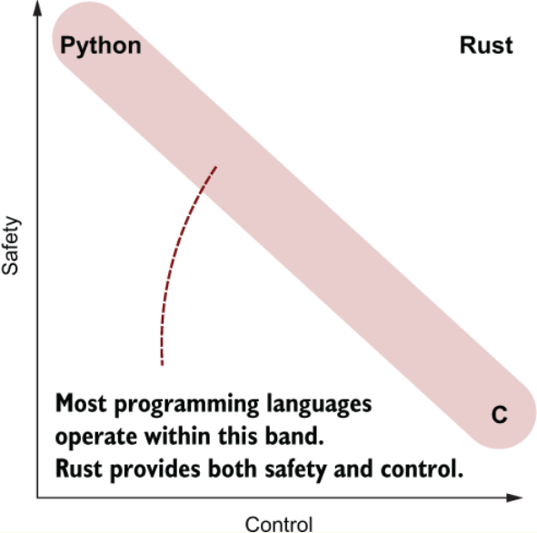
It guarantees that your program is memory-safe without imposing any runtime costs.
Goal of Rust: Safety
Rust programs are free from:
-
Dangling pointers— Live references to data that has become invalid over the course of the program (see [[ria-data-csv-bin]])
-
Data races—The inability to determine how a program will behave from run to run because external factors change (see [[pnkfx-mpsc]])
-
Buffer overflow—An attempt to access the 12th element of an array with only 6 elements (see listing 1.5)
-
Iterator invalidation—An issue caused by something that is iterated over after being altered midway through (see listing 1.6)
Memory model
RAII
Rust uses [[RAII]] (resource acquisition is initialization) to keep track of when variables and all their references are in and out of scope. Once they are out of scope, memory can be released. The borrow checker will not allow references to out of scope variables, and it only allows one mutable reference or multiple immutable references, but never both.
Explicit
Rust programs have 3 memory
(regions where data is stored)
data memory
For data that is fixed in size and static (i.e. always available through life of program). Consider the text in your program (e.g. "Hello World!"): This text's bytes are only ever read from one place and therefore can be stored in this region. Compilers make lots of optimizations with this kind of data, and they are generally considered very fast to use since locations are known and fixed.
stack memory
For data that is declared as variables within a function. The location of this memory never changes for the duration of a function call; because of this compilers can optimize code so stack data is very fast to access.
heap memory
For data that is created while the application is running. Data in this region may be added, moved, removed, resized, etc. Because of its dynamic nature it's generally considered slower to use, but it allows for much more creative usages of memory. When data is added to this region we call it an allocation. When data is removed from this section we call it a deallocation. Data with an unknown size at compile time or a size that might change must be stored on the heap instead.
String struct is also on stack,but holds a reference to data on heap
let s= Struct{x:y,z:w}
Numerous community tools
(for improving code quality and productivity)
rust-clippy, an advanced linter and style tool - This warns you of common mistakes and potential code smells. Clippy relies on compiler plugins that are marked as unstable, so it is available with nightly Rust only. With rustup, you can switch to nightly easily.
rustfmt, an opinionated code formatter-It formats code according to conventions that are mentioned in the Rust style guide. rust-analyzer, full-featured IDE integration for the Rust language
sccache, a compiler cache for rustc
Test
A test double is the general programming concept for a type used in place of another type during testing. Mock objects are specific types of test doubles that record what happens during a test so you can assert that the correct actions took place.
Rust doesn’t have objects in the same sense as other languages have objects, and Rust doesn’t have mock object functionality built into the standard library as some other languages do. However, you can definitely create a struct that will serve the same purposes as a mock object.
std:prelude
To understand what is included in local scope by default(like try_into()), you should investigate the std:: [[prelude]] module. Its documentation is available online at prelude
Method & Func
Methods are functions that are coupled to some object. From a syntactic point of view, these are just functions that don’t need to specify one of their arguments. Rather than calling open() and passing a File object in as an argument (read(f, buffer)), methods allow the main object to be implicit in the function call (f.read(buffer)) using the dot operator.1
There are a number of theoretical differences between methods and functions, but a detailed discussion of those computer science topics is available in other books. Briefly, functions are regarded as pure, meaning their behavior is determined solely by their arguments.
Methods are inherently impure, given that one of their arguments is effectively a side effect. These are muddy waters, though. Functions are perfectly capable of acting on side effects themselves. Moreover, methods are implemented with functions. And, to add an exception to an exception, objects sometimes implement static methods, which do not include implicit arguments.
To define methods, Rust programmers use an impl block
Version
Internally, Cargo uses the semver crate for parsing the versions
Glossery
Intro
Template
/*
#![allow(dead_code, unused_variables)]
packtpub-string-bin-ex-1
## Commands
```cargo run -q -p packtpub-types-string_bin --bin packtpub-string-bin-ex-1```
## What
`TODO`
## How
`TODO`
# Arguments
* `Arg1` - This is the [your type] to [your verb] the [your struct/func name]
# Return
`assert:true`
## Example
//```rust,compile_fail,ignore
*/
Core libs:
- Iterator Stepper
- String to u128
- Stringify
tags[[stepper]] [[iterator]] [[u128]] [[stringify]]
[[LIFETIME]]
[[SEMANTIC]]
[[OWNERSHIP]]
It underpins the term fearless concurrency
Borrow checking relies on three interrelated concepts—lifetimes, ownership, and borrowing:
Ownership: the notion of ownership is rather limited. An owner cleans up when its values’ lifetimes end.
For example, when a function returns, the memory holding its local variables needs to be freed. Owners cannot prevent other parts of the program from accessing their values or report data theft to some overarching Rust authority.the term move means something very specific within Rust. Nothing physically moves.Movement within Rust code refers to movement of ownership, rather than the movement of data. Ownership is a term used within the Rust community to refer to the compile-time process that checks that every use of a value is valid and that every value is destroyed cleanly. ownership system provides a route to memory safety without needing a garbage collector. Four general strategies can help with ownership issues: - Use references where full ownership is not required. - Duplicate the value. - Refactor code to reduce the number of long-lived objects. - Wrap your data in a type designed to assist with movement issues.
To borrow: there is no obligation to return the value to its owner. Its meaning is used to emphasize that while values can have a single owner, it’s possible for many parts of the program to share access to those values.
The borrow checker checks that all access to data is legal, which allows Rust to prevent safety issues. Learning how this works will, at the very least, speed up your development time by helping you avoid run-ins with the compiler. More significantly though, learning to work with the borrow checker allows you to build larger software systems with confidence.
It underpins the term fearless concurrency.
Borrowing Rules
- A reference may not live longer than what it referred to. This is obvious, since if it did, it would be referring to a garbage value.
- If there's a mutable reference to a value, no other references, either mutable or immutable references, are allowed to the same value in that scope. A mutable reference is an exclusive borrow.
- If there is no mutable reference to a thing, any number of immutable references to the same value are allowed in the scope.
To borrow a value means to access it. This terminology is somewhat confusing as there is no obligation to return the value to its owner. Its meaning is used to emphasize that while values can have a single owner, it’s possible for many parts of the program to share access to those values.
Ownership
Ownership is the methodology we use to handle memory safely without a garbage collector.
[[Ownership]] has a particular meaning within Rust. An owner is able to make any changes to the data and is responsible for deleting values that it owns when it leaves scope.
The ownership rule of Rust states the following principles:
When you create a value or a resource using the let statement and assign it to a variable, the variable becomes the owner of the resource When the value is reassigned from one variable to another, the ownership of the value moves to the other variable and the older variable becomes invalid for further use The value and the variable are deallocated at the end of their scope.
The ownership rule prevents you from having multiple points of access for modifying the value, which can lead to use after free situations, even in single threaded contexts with languages that permit multiple mutable aliases for values.
The drop and write {} method comes from the Drop trait, which is implemented for most heap allocated types in Rust and makes automatic freeing of resources a breeze.

Glossery
aliasing: Having several immutable references (&T) to the object (Rc).
mutability: Having one mutable reference (&mut T) to the object (mut Refcell).
[[ria-semantic]]
[[mr-semantic]]
[[re-move-semantic]]
primitive types are said to possess copy semantics, whereas all other types have move semantics. Adding more functionality (e.g., reference-counting semantics rather than move semantics) to types by wrapping these in other types typically reduces their run-time performance.
[[LIFETIME_DANGLING]]
[[LIFETIME_ELISION]]
[[LIFETIME_STATIC]]
[[LIFETIME_GENERIC]]
Lifetime
lifetime = timetolive = subset of their scope.
A function’s local variables live until the function returns, while global variables might live for the life of the program.
Make hypotheses about whether or not your experiments will pass the borrow checker before you compile reference in Rust has a lifetime, which is the scope for which that reference is valid.Most of the time, lifetimes are implicit and inferred, just like most of the time, types are inferred.
We must annotate types when multiple types are possible. In a similar way, we must annotate lifetimes when the lifetimes of references could be related in a few different ways. The main aim of lifetimes is to prevent dangling references, which cause a program to reference data other than the data it’s intended to reference.
All references in Rust have a lifetime, even if they are not explicitly annotated. The compiler is capable of implicitly assigning lifetimes.
A value’s lifetime is the period when accessing that value is valid behavior. A function’s local variables live until the function returns, while global variables might live for the life of the program.
When we pass concrete references to longest, the concrete lifetime that is substituted for 'a is the part of the scope of x that overlaps with the scope of y. In other words, the generic lifetime 'a will get the concrete lifetime that is equal to the smaller of the lifetimes of x and y. Because we’ve annotated the returned reference with the same lifetime parameter 'a, the returned reference will also be valid for the length of the smaller of the lifetimes of x and y. Ultimately, lifetime syntax is about connecting the lifetimes of various parameters and return values of functions. Once they’re connected, Rust has enough information to allow= memory-safe operations and disallow operations that would create dangling pointers or otherwise violate memory safety.
For data allocated on the stack, we can easily reason by looking at the code and figure out whether a variable is alive or not. For heap allocated values, though, this isn't clear.
The following are the rules that are followed when eliding lifetimes:
If the input lifetime contains only a single reference, the output lifetime is assumed to be the same
For methods involving self and &mut self, the input lifetime is inferred for the &self parameter
where we have to specify lifetimes when Rust cannot figure them out for us: * Function signatures * Structs and struct fields * impl blocks
Make hypotheses about whether or not your experiments will pass the borrow checker before you compile reference in Rust has a lifetime, which is the scope for which that reference is valid. Most of the time, lifetimes are implicit and inferred, just like most of the time, types are inferred. We must annotate types when multiple types are possible. In a similar way, we must annotate lifetimes when the lifetimes of references could be related in a few different ways.
The main aim of lifetimes is to prevent dangling references, which cause a program to reference data other than the data it’s intended to reference.
All references in Rust have a lifetime, even if they are not explicitly annotated. The compiler is capable of implicitly assigning lifetimes.
A value’s lifetime is the period when accessing that value is valid behavior. A function’s local variables live until the function returns, while global variables might live for the life of the program.
the notion of ownership is rather limited. An owner cleans up when its values’ lifetimes end.
<'a, 'b> declares two lifetime variables, 'a and 'b, within the scope of j: &'b i32 binds the lifetime variable 'b to the lifetime of j. The syntax reads as “parameter j is a reference to an i32 with lifetime b.”
Although every parameter has a lifetime, these checks are typically invisible as the compiler can infer most lifetimes by itself
All values bound to a given lifetime must live as long as the last access to any value bound to that lifetime. No lifetime annotations are required when calling a function.
'a in generic func means: function will live at least as long as lifetime 'a e.g. Note that the longest function doesn’t need to know exactly how long x and y will live, only that some scope can be substituted for 'a that will satisfy this signature.
Using two lifetime parameters (a and b) indicates that the lifetimes of i and j are decoupled. fn add_with_lifetimes<'a, 'b>(i: &'a i32, j: &'b i32) -> i32 {}
- Lifetime annotations don’t change how long any of the references live. Just as functions can accept any type when the signature specifies a generic type parameter, functions can accept references with any lifetime by specifying a generic lifetime parameter.
- Lifetime annotations describe the relationships of the lifetimes of multiple references to each other without affecting the lifetimes.
- The lifetime annotations indicate that the references first and second must both live as long as that generic lifetime.
- Lifetimes on function or method parameters are called input lifetimes, and lifetimes on return values are called output lifetimes.
<'a, 'b> declares two lifetime variables, 'a and 'b, within the scope of j: &'b i32 binds the lifetime variable 'b to the lifetime of j. The syntax reads as “parameter j is a reference to an i32 with lifetime b.”
Although every parameter has a lifetime, these checks are typically invisible as the compiler can infer most lifetimes by itself
All values bound to a given lifetime must live as long as the last access to any value bound to that lifetime. No lifetime annotations are required when calling a function.
#![allow(unused)] fn main() { let result = longest(string1.as_str(), string2); fun longest<'a>(x: &'a str, y: &'a str) -> &'a str {} }
When we pass concrete references to longest, the concrete lifetime that is substituted for 'a is the part of the scope of x that overlaps with the scope of y. In other words, the generic lifetime 'a will get the concrete lifetime that is equal to the smaller of the lifetimes of x and y. Because we’ve annotated the returned reference with the same lifetime parameter 'a, the returned reference will also be valid for the length of the smaller of the lifetimes of x and y.
Using two lifetime parameters (a and b) indicates that the lifetimes of i and j are decoupled.
#![allow(unused)] fn main() { fn add_with_lifetimes<'a, 'b>(i: &'a i32, j: &'b i32) -> i32 {} }
lifetime of that usage: the LOC('existence time' or Line of code) between when a location is first used in a certain way, and when that usage stops.
lifetime of that value: the LOC (or actual time) between when a value is created, and when that value is dropped.
might be useful when discussing open file descriptors, but also irrelevant here.
let r: &'c S = &c;
the 'c part, like a type, also guards what is allowed into r.
Ultimately, lifetime syntax is about connecting the lifetimes of various parameters and return values of functions. Once they’re connected, Rust has enough information to allow memory-safe operations and disallow operations that would create dangling pointers or otherwise violate memory safety.
lifetime of that usage
the #LOC ('existence time' or Line of code) between when a location is
first used in a certain way, and when that usage stops.
lifetime of that value
the LOC (or actual time) between when
a value is created, and when that value is dropped. might be useful when discussing open file descriptors.
Drop
When values go out of scope or their lifetimes end for some other reason, their destructors are called. A destructor is a function that removes traces of the value from the program by deleting references and freeing memory. You won’t find a call to any destructors in most Rust code. The compiler injects that code itself as part of the process of tracking every value’s lifetime.
To provide a custom destructor for a type, we implement Drop. This typically is needed in cases where we have used unsafe blocks to allocate memory. Drop has one method, drop(&mut self), that you can use to conduct any necessary wind-up activities.
Unfortunately, it’s not straightforward to disable the automatic drop functionality. Disabling drop isn’t usually necessary; the whole point of the Drop trait is that it’s taken care of automatically. Occasionally, however, you might want to clean up a value early. Rust doesn’t let you call the Drop trait’s drop method manually; instead you have to call the std::mem::drop function
Let Vs Const
If variables defined with #let are immutable, then why does Rust include a #const keyword?
The short answer is that data behind let can change. Rust allows types to have an apparently contradictory property of interior mutability. At the level of the [[COMPILER]], let relates more to #alias ing than immutability. Aliasing in compiler terminology refers to having multiple references to the same location in memory at the same time
Read-only references (borrows) to variables declared with let can alias the same data.
Read-write references (mutable borrows) are guaranteed to never alias data. Some types such as std:sync::Arc and std:#rc::Rc present an immutable façade, yet change their internal state over time. In the case of those two types, these increment a #reference_count as references to those are made and decrement that count when those references expire.
Const Vs Static
const WORDS: &'static str = "hello rust!";
Thanks to static lifetime elision, you usually don't have to explicitly use 'static:
const WORDS: &str = "hello convenience!";
const items looks remarkably similar to static items, which introduces some confusion as to which one should be used at which times. To put it simply, constants are inlined wherever they're used, making using them identical to simply replacing the name of the const with its value. Static variables, on the other hand, point to a single location in memory, which all accesses share. This means that, unlike with constants, they can't have destructors, and act as a single value across the entire codebase .
When values go out of scope or their lifetimes end for some other reason, their destructors are called. A destructor is a function that removes traces of the value from the program by deleting references and freeing memory. You won’t find a call to any destructors in most Rust code. The compiler injects that code itself as part of the process of tracking every value’s lifetime.
To provide a custom destructor for a type, we implement Drop. This typically is needed in cases where we have used unsafe blocks to allocate memory. Drop has one method, drop(&mut self), that you can use to conduct any necessary wind-up activities.
Syntax
syntax <'a, 'b> declares two lifetime variables, 'a and 'b, within the scope of j: &'b i32 binds the lifetime variable 'b to the lifetime of j. The syntax reads as “parameter j is a reference to an i32 with lifetime b.” Although every parameter has a lifetime, these checks are typically invisible as the compiler can infer most lifetimes by itself.
All values bound to a given lifetime must live as long as the last access to any value bound to that lifetime. No lifetime annotations are required when calling a function.
Example'a in generic func means: function will live at least as long as lifetime 'a e.g. Note that the longest function doesn’t need to know exactly how long x and y will live, only that some scope can be substituted for 'a that will satisfy this signature.
Using two lifetime parameters (a and b) indicates that the lifetimes of i and j are decoupled.
#![allow(unused)] fn main() { fn add_with_lifetimes<'a, 'b>(i: &'a i32, j: &'b i32) -> i32 {}//working fine without error }
Glossery
'a: lifetime a, lifetime=timetolive=subset of their scope, &'a mut i32 // a mutable reference with an explicit lifetime.
[[re-lifetime-static]]
[[ria-lifetime-static]]
[[pb-lifetime-static]]
Struct
Lifetime names for struct fields always need to be declared after the impl keyword and then used after the struct’s name, because those lifetimes are part of the struct’s type.[[STRUCT]]
In method signatures inside the impl block, references might be tied to the lifetime of references in the struct’s fields, or they might be independent. In addition, the lifetime elision rules often make it so that lifetime annotations aren’t necessary in method signatures.
#![allow(unused)] fn main() { impl<'a> ImportantExcerpt<'a> { fn announce_and_return_part(&self, announcement: &str) -> &str { println!("Attention please: {}", announcement); self.part } } struct ImportantExcerpt<'a> { part: &'a str, } }
There are two input lifetimes, so Rust applies the first lifetime elision rule and gives both &self and announcement their own lifetimes. Then, because one of the parameters is &self, the return type gets the lifetime of &self, and all lifetimes have been accounted for.
#![allow(unused)] fn main() { //no_err_func fn first_word(s: &str) -> &str {} fn first_word<'a>(s: &'a str) -> &str {} fn first_word<'a>(s: &'a str) -> &'a str {} fn longest(x: &str, y: &str) -> &str {} //err_func fn longest<'a, 'b>(x: &'a str, y: &'b str) -> &str {} //no_err_method fn longest<'a, 'b>(x: &'a str, y: &'b str) -> &str {} }
Static
#![allow(unused)] fn main() { let s: &'static str = "I have a static lifetime."; }
The text of this string is stored directly in the program’s binary, which is always available. Therefore, the lifetime of all string literals is 'static.
You might see suggestions to use the 'static lifetime in error messages.
Most of the time, the problem results from attempting to create a dangling reference or a mismatch of the available lifetimes. In such cases, the solution is fixing those problems, not specifying the 'static lifetime.
Life Time Static
Omitting lifetime annotations is formally referred to as lifetime elision
The 'static lifetime is somewhat special. It too owes its name to implementation details. Executable programs can contain a section of memory that is hard-coded with values. That section is known as static memory because it is read-only during execution.
#![allow(unused)] fn main() { let s: &'static str = "I have a static lifetime."; }
The text of this string is stored directly in the program’s binary, which is always available. Therefore, the lifetime of all string literals is 'static.
You might see suggestions to use the 'static lifetime in error messages. But before specifying 'static as the lifetime for a reference, think about whether the reference you have actually lives the entire lifetime of your program or not.
Omitting lifetime annotations is formally referred to as lifetime elision
Unfortunately, it’s not straightforward to disable the automatic drop functionality. Disabling drop isn’t usually necessary; the whole point of the Drop trait is that it’s taken care of automatically. Occasionally, however, you might want to clean up a value early.
Rust doesn’t let you call the Drop trait’s drop method manually; instead you have to call the std::mem::drop function
tags[[as_ptr]] [[from_utf8]] [[from_raw_parts]]
[[CONVERT]] [[ria-for]] [[rd-str]]
The main aim of lifetimes is to prevent dangling references. which has an outer scope and an inner scope.
fn main() { // let reference_to_nothing = dangle(); let reference_to_nothing = no_dangle(); } fn dangle() -> &String { // dangle returns a reference to a String let s = String::from("hello"); // s is a new String &s // we return a reference to the String, s } // Here, s goes out of scope, and is dropped. Its memory goes away. // Danger! //primitive types need to &'a or &'static fn no_dangle() -> String { let s = String::from("hello"); s }
no_dangle: This works without any problems. Ownership is moved out, and nothing is deallocated.
Lifetime IO
The lifetime annotations indicate that the references first and second must both live as long as that generic lifetime. Lifetimes on function or method parameters are called input lifetimes, and lifetimes on return values are called output lifetimes.
#![allow(unused)] fn main() { let result = longest(string1.as_str(), string2); fun longest<'a>(x: &'a str, y: &'a str) -> &'a str {} }
Using two lifetime parameters (a and b) indicates that the lifetimes of i and j are decoupled.
#![allow(unused)] fn main() { fn add_with_lifetimes<'a, 'b>(i: &'a i32, j: &'b i32) -> i32 {} }
Lifetime Subtyping
the 'c part, like a type, also guards what is allowed into r.
#![allow(unused)] fn main() { let r: &'c S = &c; }
This is read as the lifetime 'a outlives 'b or in other words 'b should never live longer than 'a.
#![allow(unused)] fn main() { impl<'a, 'b, S, R> Decoder<'a, 'b, S, R> where 'a: 'b {} }
Lifetime Bounds
Along with the Send bound, which says that this thread can be sent to threads, we also say that the type must live as long as the 'static lifetime.
#![allow(unused)] fn main() { struct Logger<'a>(&'a str, Level); fn configure_logger<T>(_t: T) where T: Send + 'static { // configure the logger here } }
tags[[Send]] [[LIFETIME_STATIC]] [[coercion]]
tags[[bench]]
CPU
[[ria-pointer]]
[[SMARTPOINTER]]
What are the differences between references, pointers, and memory addresses?
- A memory address, often shortened to address, is a number that happens to refer to a single byte in memory. Memory addresses are abstractions provided by assembly languages.
Used for types where it’s important to make their unsafe nature explicit.
- A pointer, sometimes expanded to raw pointer, is a memory address that points to a value of some type. Pointers are abstractions provided by higher-level languages.
Refer to something more primitive. This also includes the implication that we are responsible for maintaining safety. (There is an implied connotation of being unsafe.)
- A reference is a pointer, or in the case of dynamically sized types, a pointer and an integer with extra guarantees. References are abstractions provided by Rust.
>> References—Signal that the Rust compiler will provide its safety guarantees.
-
References always refer to valid data.
-
References are correctly aligned to multiples of usize.
-
Rust ensures that a length is kept alongside the internal pointer. That way Rust can ensure that the program never overruns the type’s space in memory.
-
Reference vs Pointer
A reference is like a pointer in that it’s an address we can follow to access data stored at that address that is owned by some other variable.
Unlike a pointer, a reference is guaranteed to point to a valid value of a particular type.
AsRef
#![allow(unused)] fn main() { fn data(&self) -> &T { self.data.as_ref() //&self.data; Equal line above } }
Special pointers
In addition, the following tools can also be handy in certain situations:
- Deeply interlinked data structures can benefit from std::rc::Weak and std::arc::Weak for single and multi-threaded programs, respectively. These allow access to data within an Rc/Arc without incrementing its reference count. This can prevent never-ending cycles of pointers.
- The alloc::raw_vec::RawVec type underlies Vec
and VecDeq . An expandable, double-ended queue that hasn’t appeared in the book so far, it understands how to allocate and deallocate memory in a smart way for any given type. - The std::cell::UnsafeCell type sits behind both Cell
and RefCell . If you would like to provide interior mutability to your types, its implementation is worth investigating.
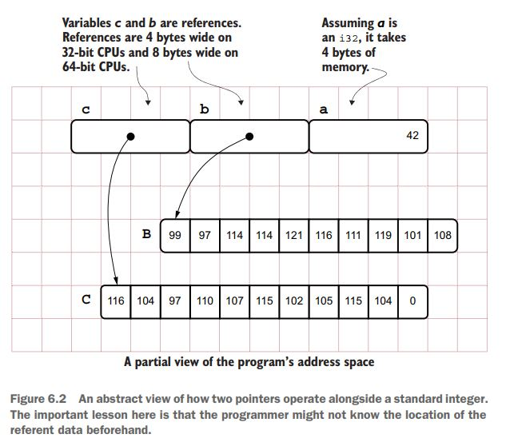
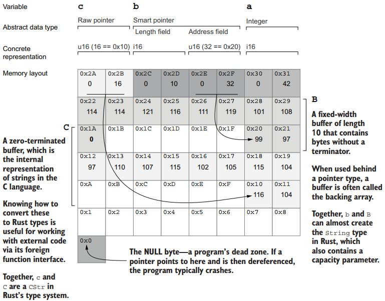
usize
[[usize]] is the memory address size for the CPU the code is compiled for. That [[CPU]] is called the compile target.
Raw Pointer
A [[raw_pointer]] is a memory address without Rust’s standard guarantees. These are inherently [[unsafe]]. For example, unlike references (&T), raw pointers can be null. If you’ll forgive the syntax, raw pointers are denoted as *const T and *mut T for immutable and mutable raw pointers.
-
The difference between a *mut T and a *const T is minimal. These can be freely [[cast]] between one another and tend to be used interchangeably, acting as in-source documentation.
-
Rust references (&mut T and &T) compile down to raw pointers. That means that it’s possible to access the performance of raw pointers without needing to venture into unsafe blocks.
-
Raw pointers do not own their values. The Rust compiler does not check that the referent data is still valid when these are accessed.
-
Multiple raw pointers to the same data are allowed. Every raw pointer can have write, read-write access to data. This means that there is no time when Rust can guarantee that shared data is valid.
-
It’s unavoidable. Perhaps some OS call or third-party code requires a raw pointer. Raw pointers are common within C code that provides an external interface. (so because of this we must use raw pointer.)
-
Shared access to something is essential and runtime performance is paramount. Perhaps multiple components within your application require equal access to some expensive-to-compute variable. If you’re willing to take on the risk of one of those components poisoning every other component with some silly mistake, then raw pointers are an option of last resort. (so because of this we must use raw pointer.)
-
Are allowed to ignore the borrowing rules by having both immutable and mutable pointers or multiple mutable pointers to the same location
-
Aren’t guaranteed to point to valid memory
-
Are allowed to be null
-
Don’t implement any automatic cleanup
Raw Pointer Rules
we can't cast a &T to a *mut T, as it would violate the borrowing rules that allow only one mutable borrow. so at the first we need as
*const u8and thenas *mut u8
#![allow(unused)] fn main() { let b_ptr = &B as *const u8 as *mut u8; }
Raw Poiner In Unsafe
Unsafe Rust has two new types called raw pointers that are similar to references. As with references, raw pointers can be immutable or mutable and are written as *const T and *mut T, respectively.
The asterisk isn’t the dereference operator; it’s part of the type name. In the context of raw pointers, immutable means that the pointer can’t be directly assigned to after being dereferenced.
unsafe Notice that we don’t include the unsafe keyword in this code. We can create raw pointers in safe code; we just can’t dereference raw pointers outside an unsafe block, as you’ll see in a bit.
Creating a raw pointer to an arbitrary memory address
#![allow(unused)] fn main() { let mut num = 5; let r1 = &num as *const i32; let r2 = &mut num as *mut i32; unsafe { println!("r1 is: {}", *r1); println!("r2 is: {}", *r2); } let address = 0x012345usize; let r = address as *const i32; unsafe { std::ptr::write(r as *mut usize, 0usize); //Memory overwrite to a address println!("r1 is: {}", *r); } }
You can create pointers safely from any integral value. An i32 is not a Vec
#![allow(unused)] fn main() { let ptr = 42 as *const Vec<String>; }
Data Race
It’s something that new Rustaceans struggle with, because most languages let you mutate whenever you’d like. The benefit of having this restriction is that Rust can prevent data races at compile time. A data race is similar to a race condition and happens when these three behaviors occur:
Two or more pointers access the same data at the same time. At least one of the pointers is being used to write to the data. There’s no mechanism being used to synchronize access to the data.
Data races cause [[undefined_behavior]] and can be difficult to diagnose and fix when you’re trying to track them down at runtime;
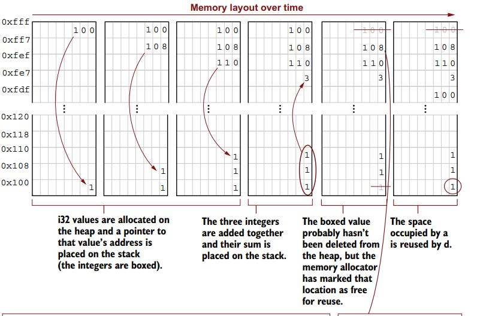
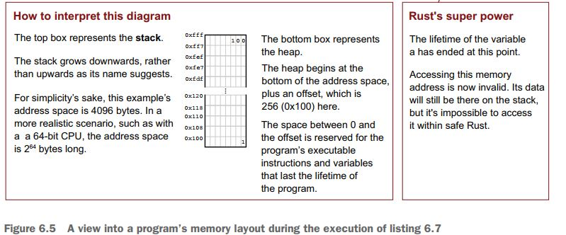
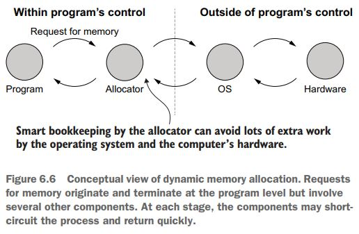
Glossery
&mut T: This means that &mut T types do not implement the Copy trait.
&T: A pointer is a Copy type, which simply means you can have many immutable references to a value T.
&: borrow
*: dereference
Rust has a feature called automatic referencing and dereferencing.Calling methods is one of the few places in Rust that has this behavior. Rust doesn’t have an equivalent to the -> operator; instead, Rust has a feature called automatic referencing and dereferencing. Calling methods is one of the few places in Rust that has this behavior.
Here’s how it works: when you call a method with object.something(), Rust automatically adds in &, &mut, or * so object matches the signature of the method. In other words, the following are the same:
#![allow(unused)] fn main() { p1.distance(&p2); (&p1).distance(&p2); }
smart_pointere.q wrapper type. Rust’s smart pointer types tend to wrap raw pointers and bestow them with added semantics.
fat pointer Vs thin pointer: The term fat pointer refers to memory layout. Thin pointers, such as raw pointers, are a single usize wide. Fat pointers are usually two usize wide,and occasionally more
tags[[smart_pointer]] [[fat_pointer]] [[data_race]]
[[BOX]]
[[RC]]
[[REF_CELL]]
[[OPS]]
[[COW]]
[[rd-customized-smartpointer-box]]
What are Smart Pointers?
They are called smart because they also have extra metadata and code associated with them that gets executed when they are created or destroyed. Being able to automatically free the underlying resource when a smart pointer goes out of scope is one of the major reasons to use smart pointers. Much of the smartness in smart pointers comes from two traits, called the Drop trait and the Deref trait.
Drop Mechanism
When we instantiate any Drop implementing value (any heap allocated type), the Rust compiler inserts drop method calls after every end of scope, after compilation. So, we don't need to manually call drop on these instances. This kind of automatic reclamation based on scope is inspired by the RAII principle of C++.
Drerf Mechanism
smart pointer types often implement the Deref trait, which allows us to use the * dereferencing operator with these types. While Deref gives you read-only access, there is also DerefMut, which can give you a mutable reference to the underlying type. Deref has the following type signature:
#![allow(unused)] fn main() { pub trait Deref { type Target: ?Sized; fn deref(&self) -> &Self::Target; } }
Deref coercion is a convenience that Rust performs on arguments to functions and methods. Deref coercion works only on types that implement the Deref trait. Deref coercion converts such a type into a reference to another type. For example, deref coercion can convert &String to &str because String implements the Deref trait such that it returns &str.
The number of times that Deref::deref needs to be inserted is resolved at compile time, so there is no runtime penalty for taking advantage of deref coercion!
Similar to how you use the Deref trait to override the * operator on immutable references, you can use the DerefMut trait to override the * operator on mutable references.
Rust does deref coercion when it finds types and trait implementations in three cases:
- From &T to &U when T: Deref<Target=U>
- From &mut T to &mut U when T: DerefMut<Target=U>
- From &mut T to &U when T: Deref<Target=U>
- The third case is trickier: Rust will also coerce a mutable reference to an immutable one. But the reverse is not possible
the Drop trait is almost always used when implementing a smart pointer. For example, when a Box
is dropped it will deallocate the space on the heap that the box points to.Note that we didn’t need to call the+ drop method explicitly.
We call the as_ref method on the Option because we want a reference to the value inside the Option rather than ownership of the value. Because state is an
Option<Box<dyn State>>
#![allow(unused)] fn main() { impl Post { // --snip-- pub fn content(&self) -> &str { self.state.as_ref().unwrap().content(self) } // --snip-- }
At this point, when we call content on the
&Box<dyn State>, deref coercion will take effect on the & and the Box so the content method will ultimately be called on the type that implements the State trait.
If defines a single method called Deref that takes self by reference and returns a immutable reference to the underlying type. This combined with the deref coercion feature of Rust, reduces a lot of code that you have to write. Deref coercion is when a type automatically gets converted from one type of reference to some other reference.
Comparistions of Smart pointers
Rc
enables multiple owners of the same data; whenever somebody takes a new reference, and decrements it when someone releases a reference. When the counter hits zero, the value is dropped.Rc does not allow mutation. To permit that, we need to wrap our wrapper. Rc<RefCell > is a type that can be used to perform interior mutability . An object that has interior mutability presents an immutable façade while internal values are being modified. Rc is not thread-safe. In multithreaded code, it’s much better to replace Rc with Arc and Rc<RefCell > with Arc<Mutex >. Arc stands for atomic reference counter.
Box
The ownership semantics with Box type depends on the wrapped type. If the underlying type is Copy, the Box instance becomes copy, otherwise it moves by default.allows immutable or mutable borrows checked at compile time; Rc allows only immutable borrows checked at compile time; RefCell allows immutable or mutable borrows checked at runtime.
Because RefCell
allows mutable borrows checked at runtime, you can mutate the value inside the RefCell even when the RefCell is immutable.
Arc
: This is for atomic reference counting. This is like the previous type, but with atomicity to guarantee multithread safety.
Cell
: This gives us internal mutability for types that implement the Copy trait. In other words, we gain the possibility to get multiple mutable references to something.
RefCell
: This gives us internal mutability for types, without requiring the Copy trait. It uses runtime locking for safety. Lets us have many immutable borrows or one mutable borrow at any point in time.Box and RefCell have single owners. For types that implement Copy, the get method retrieves the current interior value. For types that implement Default, the take method replaces the current interior value with Default::default() and returns the replaced value.For all types, the replace method replaces the current interior value and returns the replaced value and the into_inner method consumes the Cell and returns the interior value. Additionally, the set method replaces the interior value, dropping the replaced value.
Comparison of inherited and interior/mutability
We say that Cell
and RefCell provide ‘interior mutability’, in contrast with typical Rust types that exhibit ‘inherited mutability’ the pattern uses unsafe code inside a data structure to bend Rust’s usual rules that govern mutation and borrowing.
Similar to Rc
, RefCell is only for use in [[single_threaded]] scenarios.The Cell and RefCell types are not thread safe. This simply means that Rust won't allow you to share these types in multiple threads.
Neither Cell
nor RefCell Standard library has other types that provide interior mutability:are thread safe (they do not implement #Sync)
Such as Cell
, which is similar except that instead of giving references to the inner value, the value is copied in and out of the Cell .
There’s also Mutex
, which offers interior mutability that’s safe to use across threads [[multi_tread]] scenarios.
Pointer Definations
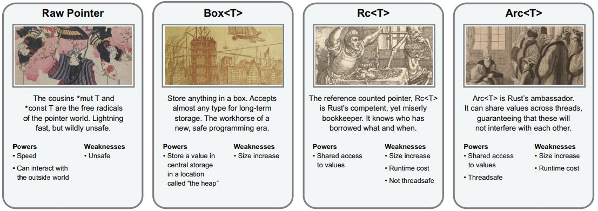
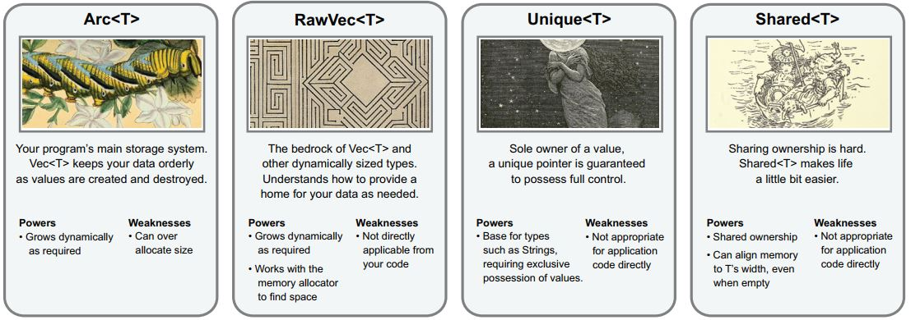
[[ria-smartpointer-rc]]
[[rd-smartpointer-rc]]
[[LINKEDLIST]]
[[SemiAutomatic]]
To enable multiple ownership, Rust has a type called Rc
, which is an abbreviation for reference counting. The Rc type keeps track of the number of references to a value to determine whether or not the value is still in use. If there are zero references to a value, the value can be cleaned up without any references becoming invalid.
Imagine Rc
as a TV in a family room. When one person enters to watch TV, they turn it on. Others can come into the room and watch the TV. When the last person leaves the room, they turn off the TV because it’s no longer being used. If someone turns off the TV while others are still watching it, there would be uproar from the remaining TV watchers!
We use the Rc
type when we want to allocate some data on the heap for multiple parts of our program to read and we can’t determine at compile time which part will finish using the data last. If we knew which part would finish last, we could just make that part the data’s owner, and the normal ownership rules enforced at compile time would take effect.
Rc increases by 1 whenever an Rc is cloned, and decreases by 1 whenever one cloned Rc is dropped out of the scope
The definition of Cons to hold references instead, but then we would have to specify lifetime parameters.
By specifying [[lifetime]] parameters, we would be specifying that every element in the list will live at least as long as the entire list.
multiple [[mutable_borrow]] s to the same place can cause [[data_race]] s and inconsistencies.
But being able to mutate data is very useful! In the next section, mutability pattern and the RefCell
type that you can use in conjunction with an Rc to work with this [[interior_immutability]] restriction
Using Rc
came with the risk of creating reference cycles, where two Rc values refer to each other, causing [[memory_leaks]].
Interior mutability is a design pattern
That allows you to mutate data even when there are immutable references to that data; normally, this action is disallowed by the borrowing rules. To mutate data, the pattern uses unsafe code inside a data structure to bend Rust’s usual rules that govern mutation and borrowing.
RefCell
type that follows the interior mutability pattern.
Unlike Rc
, the RefCell type represents single ownership over the data it holds. So, what makes RefCell different from a type like Box ? Recall the borrowing rules you learned in Chapter 4:
Similar to Rc
, RefCell is only for use in single-threaded scenarios and will give you a compile-time error if you try using it in a multithreaded context.
At any given time, you can have either (but not both of) one mutable reference or any number of immutable references.References must always be valid.
RefCell
uses Rust’s lifetimes to implement ‘dynamic borrowing’, a process whereby one can claim temporary, exclusive, mutable access to the inner value. Because RefCell borrows are dynamic it is possible to attempt to borrow a value that is already mutably borrowed; when this happens it results in thread panic.
Refcell and Cell
With [[interior_mutability]], you may want to provide an argument to a method that takes immutable values, yet you need to retain mutability. If you’re willing to pay the runtime performance cost, it’s possible to fake immutability.
If the method requires an owned value, wrap the argument in Cell
. References can also be wrapped in RefCell .
RC
Rc is not threadsafe in spite of [[Arc]], RC is common when using the reference counted types Rc
and Arc , which only accept immutable arguments, to also wrap those in Cell or RefCell . The resulting type might look like Rc<RefCell >.
This means that you pay the runtime cost twice (by using additional wrapper as Rc on Cell or RefCell wrapers) but with significantly more flexibility.
With shared ownership, some objects, such as a network connection or, perhaps, access to some OS service, are difficult to mould into the pattern of having a single place with read-write access at any given time. Code might be simplified if two parts of the program can share access to that single resource. Rust allows you to do this, but again, at the expense of a runtime cost.
Rc internally keeps two kinds of references: strong (Rc
) and weak (Weak) . Both keep a count of how many references of each type have been handed out.
To enable multiple ownership, Rust has a type called Rc
, which is an abbreviation for reference counting. The Rc type keeps track of the number of references to a value to determine whether or not the value is still in use. If there are zero references to a value, the value can be cleaned up without any references becoming invalid.
Imagine Rc
as a TV in a family room. When one person enters to watch TV, they turn it on. Others can come into the room and watch the TV. When the last person leaves the room, they turn off the TV because it’s no longer being used. If someone turns off the TV while others are still watching it, there would be uproar from the remaining TV watchers!
We use the Rc
type when we want to allocate some data on the heap for multiple parts of our program to read and we can’t determine at compile time which part will finish using the data last. If we knew which part would finish last, we could just make that part the data’s owner, and the normal ownership rules enforced at compile time would take effect.
Note that Rc
is only for use in single-threaded scenarios.
Rc increases by 1 whenever an Rc is cloned, and decreases by 1 whenever one cloned Rc is dropped out of the scope
the definition of Cons to hold references instead, but then we would have to specify lifetime parameters. By specifying lifetime parameters, we would be specifying that every element in the list will live at least as long as the entire list.
multiple mutable borrows to the same place can cause data races and inconsistencies. But being able to mutate data is very useful! In the next section, mutability pattern and the RefCell
type that you can use in conjunction with an Rc to work with this Interior immutability restriction
using Rc
came with the risk of creating reference cycles, where two Rc values refer to each other, causing memory leaks.
Rc VS Arc [[code-like-pro]]
Unlike [Rc
], Arc uses atomic operations for its reference counting. This means that it is thread-safe. The disadvantage is that atomic operations are more expensive than ordinary memory accesses. If you are not sharing reference-counted allocations between threads, consider using [Rc
] for lower overhead .[Rc
] is a safe default, because the compiler will catch any attempt to send an [Rc ] between threads. However, a library might choose Arc in order to give library consumers more flexibility.
RC-Immutate
If implementing Clone would be prohibitively expensive, Rc
can be a handy alternative. This allows two places to “share” ownership.
Some types overload the [[Clone]] trait. This is done to provide something similar to, yet different from, creating duplicates. For example, std::rc::Rc
uses Clone to create additional references when .clone() is called.
We could have called a.clone() rather than Rc::clone(&a), but Rust’s convention is to use Rc::clone in this case. The implementation of Rc::clone doesn’t make a deep copy of all the data like most types’ implementations of clone do.The call to Rc::clone only increments the reference count, which doesn’t take much time. Deep copies of data can take a lot of time.
Rc is used to track valid references. As each reference is created, an internal counter increases by one. When a reference is dropped, the count decreases by one. When the count hits zero, T is also dropped. Wrapping T involves a calling Rc::new().
Rc
implements Clone. Every call to base.clone() increments an internal counter. Every Drop decrements that counter. When the internal counter reaches zero, the original instance is freed
RC Mutate
Rc
does not allow mutation. To permit that, we need to wrap our wrapper.
Rc<RefCell
> is a type that can be used to perform interior mutability
Reference counting semantics Vs Move semantic
Adding more functionality (e.g., reference-counting semantics rather than move semantics) to types by wrapping these in other types typically reduces their runtime performance. If implementing Clone would be prohibitively expensive, Rc
can be a handy alternative. This allows two places to “share” ownership. Rc
is not thread-safe. In multithreaded code , it’s much better to replace Rcwith Arc and Rc<RefCell > with Arc<Mutex >. [[Arc]] stands for #atomic reference counter.
tags[[pattern_design_interior]]
[[ria-smartpointer-box]]
[[rd-customized-smartpointer-box]]
The Box type can be used in the following situations:
It can be used to create recursive type definitions.
When you need to store types as trait objects.
When you need to store functions in a collection.
cons=recursive type
We now know that any List value will take up the size of an i32 plus the size of a box’s pointer data. By using a box, we’ve broken the infinite, recursive chain, so the compiler can figure out the size it needs to store a List value. Cons+Box :A List that is not infinitely sized because Cons holds a Box Cons : A List that is infinitely sized because Cons is just a name and it is replacable with anyname.
Boxes allow you to store data on the heap rather than the stack.
What remains on the stack is the pointer to the heap also don’t have any performance overhead that these special capabilities incur, so they can be useful in cases like the cons list where the indirection is the only feature we need. >>The Box
type is a [[smart_pointer]] because it implements the #Deref trait, which allows Box
values to be treated like references . When a Boxvalue goes out of scope, the [[heap]] data that the box is pointing to is cleaned up as well because of the [[Drop]] [[trait]] implementation.
You’ll use them most often in these situations:
When you have a type whose size can’t be known at compile time and you want to use a value of that type in a context that requires an exact size When you have a large amount of data and you want to transfer ownership but ensure the data won’t be copied when you do so When you want to own a value and you care only that it’s a type that implements a particular trait rather than being of a specific type.
At [[compile_time]] , Rust needs to know how much space a type takes up. One type whose size can’t be known at compile time is a recursive type, where a value can have as part of itself another value of the same type. Because this nesting of values could theoretically continue infinitely, Rust doesn’t know how much space a value of a recursive type needs.
However, boxes have a known size, so by inserting a box in a recursive type definition, you can have recursive types.
Box is very useful for returning traits. You also saw that we can use impl Trait to return other traits, or closures. Box can be used in a similar way.
You can use a Box because otherwise the compiler won't know the size of the value.
[[dyn]] is a word that shows you that you are talking about a trait, not a struct or anything else.
Recursive
At compile time, Rust needs to know how much space a type takes up. One type whose size can’t be known at compile time is a recursive type, where a value can have as part of itself another value of the same type. Because this nesting of values could theoretically continue infinitely, Rust doesn’t know how much space a value of a recursive type needs. However, boxes have a known size, so by inserting a box in a recursive type definition, you can have recursive types.
Let’s explore the cons list, which is a data type common in functional programming languages, as an example of a recursive type. The cons list type we’ll define is straightforward except for the recursion; therefore, the concepts in the example we’ll work with will be useful any time you get into more complex situations involving recursive types. A cons list is a data structure.
cons function (short for “construct function”) constructs a new pair from its two arguments, which usually are a single value and another pair. These pairs containing pairs form a list. cons x onto y” informally means to construct a new container instance by putting the element x at the start of this new container, followed by the container y.
Each item in a cons list contains two elements: the value of the current item and the next item. The last item in the list contains only a value called Nil without a next item. A cons list is produced by recursively calling the cons function. The canonical name to denote the base case of the recursion is Nil. The canonical name to denote the base case of the recursion is Nil. Note that this is not the same as the “null” or “nil” concept.
Although functional programming languages use cons lists frequently, the cons list isn’t a commonly used data structure in Rust. Most of the time when you have a list of items in Rust, Vec
is a better choice to use. Other, more complex recursive data types are useful in various situations, but by starting with the cons list, we can explore how boxes let us define a recursive data type without much distraction. Nil variant stores no values, so it needs less space than the Cons variant.
Drop Box
All of the programmer-facing pointer types like Box
are built from more primitive types that live deeper within Rust, often in its core or alloc modules.
std::mem::drop brings the function #drop () into local scope. drop() deletes objects before their scope ends. Types that implement Drop have a drop() method, but explicitly calling it is illegal within user code. std::mem::drop is an escape hatch from that rule.
tags[[recursive]]
[[mr-ref-cell]]
Interior Mutability
*o.into_mut() += 2;// About ~ like borrow_mut in RC type both of them called interior mutability pattern(Mutably the wrap value).
Interior mutability is a design pattern in Rust that allows you to mutate data even when there are immutable references to that data; normally, this action is disallowed by the borrowing rules. To mutate data, the pattern uses unsafe code inside a data structure to bend Rust’s usual rules that govern mutation and borrowing.
RefCell
type that follows the interior mutability pattern.
The RefCell
type is useful when you’re sure your code follows the borrowing rules but the compiler is unable to understand and guarantee that.
The RefCell type provides us with the following two borrowing methods:
- The borrow method takes a new immutable reference
- The borrow_mut method takes a new mutable reference
The mutability of a binding is not fine-grained; a value is either immutable or mutable, and that includes all of its fields if it's a struct or an enum. Cell and RefCell can turn an immutable thing into something that's mutable, allowing us to define parts of an immutable struct as mutable.
Whenever we're using RefCell borrows, it's a good practice to think carefully that we're using it in a safe way, since making mistakes there may lead to runtime panics. In this implementation, however, it's easy to see that we have just the single borrow, and that the closing block immediately discards it.
Apart from shared ownership, we can also get shared mutability at runtime with Rust's concept of interior mutability, which are modeled by special wrapper smart pointer types.
We need to understand the concept of interior mutability and inherited mutability:
Inherited mutability: This is the default mutability you get when you take a &mut reference to some struct. This also implies that you can modify any of the fields of the struct.
Interior mutability: In this kind of mutability, even if you have a &SomeStruct reference to some type, you can modify its fields if the fields have the type as Cell
or RefCell . to ensure that no two mutable borrows are present at runtime.
Cell
only added cost is that you have to write a bit more. The additional runtime cost is zero, though, and the references to the mutable things remain immutable.
The Cell
Cell::new method allows you to create new instances of the Cell type by passing it any type T.
Get: The get method allows you to copy of the value in the cell. This method is only available if the wrapped type T is Copy.
Set: Allows you to modify the inner value, even behind a immutable reference.
RefCell
If you need Cell-like features for non-Copy types, there is the RefCell type. It uses a read/write pattern similar to how borrowing works, but moves the checks to runtime, which is convenient but not zero-cost.
RefCell vs Cell
RefCell hands out references to the value, instead of returning things by value as is the case with the Cell type.
[[er-smartpointer-ops]]
[[Cow]] is a [[smart_pointer]] type that reads from its pointer location without needing to copy(like Box, stands for copy on write) it first.
Why write something down when you only need to read it? Perhaps you only want to make modifications. This is the role of Cow (copy on write).
#![allow(unused)] fn main() { use std::borrow::Cow; pub enum Cow<'a, B> where B: 'a + ToOwned + 'a + ?Sized, { Borrowed(&'a B), Owned(<B as ToOwned>::Owned), } }
First, we have the two variants:
- Borrowed that represents the borrowed version of some type B. This B has to implement the ToOwned trait.
- There is also owned variant which contains the owned version of the type.
This type is suitable for cases where one needs to avoid allocations where it's not needed. A real world example is the JSON parser crate called serde_json.
[[CStr]] is a C-like string type that allows Rust to read in zero-terminated strings.
use std::ffi::CStr;
[[c_char]] , a type alias for Rust’s i8 type, presents the possibility of a platform-specific nuances.
use std::os::raw::c_char;
#![allow(unused)] fn main() { static B: [u8; 10] = [99, 97, 114, 114, 121, 116, 111, 119, 101, 108]; static C: [u8; 11] = [116, 104, 97, 110, 107, 115, 102, 105, 115, 104, 0]; }
fn main() { let a = 42; }
String is a [[smart_pointer]] type that holds a pointer to a backing array and a field to store its size
let b: String;
[[Cow]] accepts a type parameter for the data it points to; str is the type returned by CStr. #to_string_lossy (), so it is appropriate here.
Cow stands for copy on write. This smart pointer type is handy when an external source provides a buffer. Avoiding copies increases runtime performance.
std:: [[ffi]] is the foreign function interface module from Rust’s standard library.
use std::os::raw::c_char; is not strictly needed, but it does make the code’s intent clear.
C does not define the width of its char type in its standard, although it’s one byte wide in practice. Retrieving the type alias c_char from the std::os:raw module allows for differences.
#![allow(unused)] fn main() { let c: Cow<str>; unsafe {} }
References cannot be [[cast]] directly to *mut T, the type required by String::from_raw_parts(). But [[star_const]] T can be cast to *mut T, leading to this double cast syntax
let b_ptr = &B as *const u8 as *mut u8;
String:: #from_raw_parts () accepts a pointer (*mut T) to an array of bytes, a size, and a [[capacity]] parameter
b = String::from_raw_parts(b_ptr, 10, 10);
Converts a *const u8 to a *const i8, aliased to c_char. The conversion to i8 works because we remain under 128, following the #ASCII standard.
let c_ptr = &C as *const u8 as *const c_char;
Conceptually, CStr:: #from_ptr () takes responsibility for reading the pointer until it reaches 0; then it generates Cow
from the result
c = CStr::from_ptr(c_ptr).to_string_lossy();
#![allow(unused)] fn main() { println!("a: {}, b: {}, c: {}", a, b, c); }
tags[[Box]] [[LinkedList]] [[Cow]] [[from_raw_parts]] [[from_ptr]] [[CStr]] [[raw_pointer]]
[[pp-command]]
[[VECTOR]]
[[SLICE]]
[[HASHMAP]]
reserve more space to avoid frequent reallocations.
- String with_capacity()
- Vec reserve()
Slice vs Char Vs Vec
•char—A single character encoded as 4 bytes. The internal representation of char is equivalent to UCS-4/UTF-32. This differs from &str and String, which encodes single characters as UTF-8. Conversion does impose a penalty, but it means that char values are of fixed-width and are, therefore, easier for the compiler to reason about. Characters encoded as UTF-8 can span 1 to 4 bytes.
•[u8]—A slice of raw bytes, usually found when dealing with streams of binary data. It’s easy to get confused with slices [T], which do not have a compile-time length. Slices are dynamically sized array-like objects. The term dynamically sized means that their size is not known at compile time. Yet, like arrays, these don’t expand or contract. The use of the word dynamic in dynamically sized is closer in meaning to dynamic typing rather than movement. The lack of compile-time knowledge explains the distinction in the type signature between an array ([T; n ]) and a slice ([T]).
Slices are important because it’s easier to implement traits for slices than arrays. Traits are how Rust programmers add methods to objects. As [T; 1], [T; 2], ..., [T; n ] are all different types, implementing traits for arrays can become unwieldy. Creating a slice from an array is easy and cheap because it doesn’t need to be tied to any specific size.
Another important use for slices is their ability to act as a view on arrays (and other slices). The term view here is taken from database technology and means that slices can gain fast, read-only access to data without needing to copy anything around.
The problem with slices is that Rust wants to know the size of every object in your program, and slices are defined as not having a compile-time size. References to the rescue. As mentioned in the discussion about the use of the term dynamically sized, slice size is fixed in memory. These are made up of two usize components (a pointer and a length). That’s why you typically see slices referred to in their referenced form, &[T] (like string slices that take the notation &str).
•Vec
—A vector of raw bytes, usually created when consuming [u8] data. String is to Vec as str is to [u8]. Vectors (Vec ) are growable lists of T. Using vectors is extremely common in Rust code. These incur a small runtime penalty compared to arrays because of the extra bookkeeping that must be done to enable their size to change over time. But vectors almost always make up for this with their added flexibility. Vec performs best when you can provide it with a size hint via Vec::with_ capacity(). Providing an estimate minimizes the number of times memory will need to be allocated from the OS. Lists of things are incredibly common. The two types that you will work with most often are arrays and vectors. Arrays are fixed-width and extremely lightweight.
Fully understanding the distinction between String and &str requires knowledge of arrays and vectors. Textual data is similar to these two types with added convenience methods applied over the top.
Avoid Iterator index
This is legal Rust. It’s also essential in cases when iterating directly over collection via for item in collection is impossible. However, it is generally discouraged.
The manual approach introduces two problems with this: Performance—Indexing values with the collection[index] syntax incurs run-time costs for bounds checking. That is, Rust checks that index currently exists within collection as valid data. Those checks are not necessary when iterating directly over collection. The compiler can use compile-time analysis to prove that illegal access is impossible.
Safety—Periodically accessing collection over time introduces the possibility that it has changed. Using a for loop over collection directly allows Rust to guarantee that the collection remains untouched by other parts of the program.
[[clp-hashmap]]
[[mr-hashmap]]
[[ria-hashmap]]
The hashing algorithm used for hashing the keys of the HashMap type is based on the Robin hood open addressing scheme, >but can be replaced with a custom hasher depending on the use case and performance
Avoid Duplication
If we want to preserve the old values, especially if we want to update a key with no value, we can use entry() paired with or_insert() Default setting which is using insert you will have any duplicated key or val.
map.insert(key, "some value".into());but when we use entry(word).or_insert(0) that will make avoid duplicated k/v.
#![allow(unused)] fn main() { let mut map = HashMap::<CompoundKey, String>::new(); let tmp = map.entry(word).or_insert(0); }
Snipped code
#![allow(unused)] fn main() { map.entry($1key_str$2).or_insert(10);, map.entry(key).and_modify(|e| { *e += 2 });, , if let Entry::Occupied(o) = map.entry(key) {, *o.into_mut() += 2;, }, *map.entry(key).or_insert(10)+=2; }
[[clp-arithmetic]]
[[mr_iter]]
[[rd-slice]]
A slice is a type which lacks ownership. Slices are a generic way to get a view into a collection type. Most use cases are to get a read only access to a certain range of items in a collection type. A slice is basically a pointer or a reference that points to a continuous range in an existing collection type that's owned by some other variable.
Under the hood, slices are #fat_pointer s to existing data somewhere in the stack or the heap. By fat pointer, it means that they also have information on how many elements they are pointing to, along with the pointer to the data.
we can't have slices as bare values – only behind a pointer. This is because slices are unsized types.
Note: The &str type also comes under the category of a slice type (a [u8]). The only distinction from other byte slices is that they are guaranteed to be UTF-8. Slices can also be taken on Vecs or Strings.
Slicing can be shared and immutable.
tagsunsize
[[ria-vec]]
Therefore, vectors are not in scope when using the following feature:
#![no_std]. A "Vec" type is shorthand for vector. Vectors are arrays that will dynamically expand when needed. The underscore asks the the compiler to infer the type of the vector's elements.
#![allow(unused)] fn main() { let fields: Vec<_> = record }
Make this a while let statement - remember that vector.pop also adds another layer of Option
You can stack Option<T>'s into while let and if let
#![allow(unused)] fn main() { while let Some(Some(value)) = optional_values_vec.pop() { println!("current value: {}", value); } }
[[mr-linkedlist]]
[[rd-linkedlist]]
In the preceding diagram, we have two variables, var1 and var2, that reference two resources, Obj1 and Obj2. Along with that, Obj1 also has a reference to Obj2 and Obj2 has a reference to Obj1. Both Obj1 and Obj2 have reference count of 2 when var1 and var2 goes out of scope, the reference count of Obj1 and Obj2 reaches 1. They won't get freed because they still refer to each other.
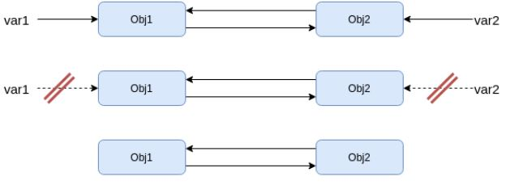
The reference cycle can be broken using weak references. As another example, a linked list might be implemented in such a way that it maintains links via reference counting to both the next item and to the previous. A better way to do this would be to use strong references to one direction and weak references to the other.
That changes a bit if we want to keep the structure this simple but still have a double-linked list, since then we actually have to change the existing structure.(
sample codemaster-rust-linkedlist-main)
You can downgrade an Rc
type into a Weak type with the downgrade method, and similarly a Weak type can be turned into Rc using the upgrade method.
The downgrade method will always work. In contrast, when calling upgrade on a weak reference, the actual value might have been dropped already, in which case you get a None.(
sample codemater-rust-linkedlist-ex-1)
We could make append take a mutable reference to self, but that would mean that we could only append to the list if all the nodes' bindings were mutable, forcing the whole structure to be mutable. What we really want is a way to make just one small part of the whole structure mutable, and fortunately we can do that with a single RefCell.(
sample codemater-rust-linkedlist-ex-2)
Whenever we're using RefCell borrows, it's a good practice to think carefully that we're using it in a safe way, since making mistakes there may lead to runtime panics. In this implementation, however, it's easy to see that we have just the single borrow, and that the closing block immediately discards it.
Future work: Apart from shared ownership, we can also get shared mutability at runtime with Rust's concept of interior mutability, which are modeled by special wrapper smart pointer types.
[[ria-commandline]]
[[ria-data-csv-bin]]
[[ria-regex]]
[[ria-parser]]
[[mr-operator]]
[[ARITHMETIC]]
[[IO]]
[[OPERATOR]]
[[SERDE]]
Tuple is to capture variables independently and put them into a structure.
`tags' [[serde]] [[json]] [[rmp_serde]] [[from_read_ref]] [[arithmetic]]
[[ria-operator]]
[[ria-texttoenum]]
Using type casts carelessly will cause your program to behave unexpectedly. For example, the expression 300_i32 as i8 returns 44.
- *BecauseOf(-): *BecauseOf(?): using as //300-128=172-128=44
try_into is better than 'as' because of error handling. The try_into() method returns an i32 value wrapped within a Result.
unwrap: if this result does not emit an error. it will resolve with the value. unwrap in not suit for prod because input validation The unwrap() method can handle the success value and returns the value of b as an i32 here
tags[[try_into]]
Glossery
'turbofish': ::<>() , ::. Combined with the (angular brackets=Bound) for generics
[[ria-data-io-io]]
[[ria-data-file]]
[[pp-data-file]]
Concepts
Higher-order programming
Functions can both accept and return functions. includes a [[CLOSURE]], also known as an #anonymous_function or #lambda function.
Examples
let fields: Vec<_> = record
.split(',')
.map(|field| field.trim())
.collect();
Conditional compilation
Not included in release builds of the program.
[[conditional_compilation]] [[cfg]]
Examples
if cfg!(debug_assertions) {
eprintln!("debug: {:?} -> {:?}",record, fields);
}
Conditionally processing data
The if let construct is a concise method of conditionally processing data that also provides a local variable assigned to that data. The parse() method returns Ok(T) (where T stands for any type) when it can successfully parse the string; otherwise, it returns Err(E) (where E stands for an error type)
[[conditional_processing]]
Examples
if let Ok(length) = fields[1].parse::<f32>() {
}
[[clp-arithmetic]]
[[mr-arithmetic]]
By wrapping arithmetic, we mean that adding 1 to 255 (a u8) will result in 0.
When the programmer wants to allow wrapping semantics on arithmetic operations, then they may choose to ignore the panic and proceed to compile in release mode. That's another aspect of #safety that the language provides you.
tags[[serde_json]]
[[ria-copy-clone]]
[[ria-rc]]
One alternative to refactoring is to simply copy values. Doing this often is typically frowned upon, however, but it can be useful in a pinch. Primitive types like integers are a good example of that. Primitive types are cheap for a CPU to duplicate—so cheap, in fact, that Rust always copies these if it would otherwise worry about ownership being moved.
Types can opt into two modes of duplication: cloning and copying.
[[ria-copy-clone]] [[SEMANTIC]]
Semantics
Move semantics: A value that gets moved to the receiving item when accessed through a variable or reassigning to a variable exhibits move semantics. Rust has move semantics by default due to its affine type system. A highlighting part of affine type systems is that values or resources can only be used once, and Rust exhibits this property with the ownership rule.
Copy semantics: A value that gets copied (as in a bitwise copy) by default when assigned or accessed through a variable or passed to/returned from a function exhibits copy semantics. This means that the value can be used any number of times and each value is completely new.
Copy
So why do Rust programmers not always use Copy? There are three main reasons:
The Copy trait implies that there will only be negligible performance impact. This is true for numbers but not true for types that are arbitrarily large, such as String.Because Copy creates exact copies, it cannot treat references correctly.
Naïvely copying a reference to T would (attempt to) create a second owner of T.
That would cause problems later on because there would be multiple attempts to delete T as each reference is deleted.
It appears that Copy depends on the Clone trait. This is because Copy is defined in the standard library as follows:
#![allow(unused)] fn main() { pub trait Copy: Clone { } }
Copy is an auto trait that is implemented automatically on most stack data types such as primitives and immutable references but Types that don't implement Copy are Vec
, String, and mutable references. To make copies of these values, we use the more explicit Clone trait.
Items such as String and Vec that are heavy to copy, only implements the Clone trait. Smart pointer types also implement the Clone trait where they just copy the pointer and extra metadata such as the reference count while pointing to the same heap data
Clone
When to implement Clone on a type:
The Clone trait merely declares a clone method, which needs to be called explicitly.
If your type also contains a value on the heap as part of its representation, then opt for implementing Clone, which makes it explicit to users that will also be cloning the heap data.
If you are implementing a smart pointer type such as a reference counting type, you should implement Clone on your type to only copy the pointers on the stack.
Shallow copy VS Deep copy
Concept of copying the pointer, length, and capacity without copying the data probably sounds like making a shallow [[copy]] . If a type implements the Copy trait, a variable is still valid after assignment to another variable.
If we do want to deeply copy the heap data of the String, not just the stack data, we can use a common method called clone.
Clone Vs Copy
Without Copy, Rust applies move semantics to a type’s access. When using [[Clone]], copying data is explicit.Until a type implements either Copy or Clone, its internal data cannot be copied.
Types can opt into two modes of duplication: cloning and copying.
Cloning (std::clone::Clone)
May be slow and expensive.
Never implicit. A call to the .clone() method is always required.
May differ from original. Crate authors define what cloning means for their types.
Here are some of the types that implement Copy:
- All the integer types, such as u32.
- The Boolean type, bool, with values true and false.
- All the floating point types, such as f64.
- The character type, char.
- Tuples, if they only contain types that also implement Copy.
- For example,** (i32, i32)** implements Copy(because all of [[primitive]] types are fix size so they store on stack), but (i32, String) does not.
Copying (std::marker::Copy)
Always fast and cheap.
Always implicit.
Always identical.
Copies are bit-for-bit duplicates of the original value.
Copy Vs Vec Vs Slice
In Rust Copy has a specific meaning of duplicating bytes without doing any additional bookkeeping. Vec is fundamentally incompatible with this, because it owns heap-allocated storage, which must have only one and exactly one owner. If it was allowed to be Copy, it'd be unclear which of the copies is the last one to free the storage.
Slice &[] can be Copy, because it doesn't free the storage.
Handle error of Copy
But if the compiler is telling you to make something Copy, that's just a suggestion. You don't have to do this. You may have just misunderstanding of ownership, and you could avoid the need to copy by reorganizing your code, e.g.
- using shared references
- using a different data structure
- moving values to different structs or scopes.It depends on the situation.
#[derive(Debug)]
struct Foo;
fn main() {
let a = Foo;
let closure = move || {
let b = a;
b
};
println!("{:?}", a); //error
println!("{:?}", b);//error
println!("{:?}", closure());//no error
}
Glossery
implicit: encapsulation (like method, copy)
tags[[semantic]] [[move]] [[copy]] [[clone]]
[[ria-smartpointer-rc]]
[[rd-smartpointer-rc]]
[[LINKEDLIST]]
[[SemiAutomatic]]
To enable multiple ownership, Rust has a type called Rc
, which is an abbreviation for reference counting. The Rc type keeps track of the number of references to a value to determine whether or not the value is still in use. If there are zero references to a value, the value can be cleaned up without any references becoming invalid.
Imagine Rc
as a TV in a family room. When one person enters to watch TV, they turn it on. Others can come into the room and watch the TV. When the last person leaves the room, they turn off the TV because it’s no longer being used. If someone turns off the TV while others are still watching it, there would be uproar from the remaining TV watchers!
We use the Rc
type when we want to allocate some data on the heap for multiple parts of our program to read and we can’t determine at compile time which part will finish using the data last. If we knew which part would finish last, we could just make that part the data’s owner, and the normal ownership rules enforced at compile time would take effect.
Rc increases by 1 whenever an Rc is cloned, and decreases by 1 whenever one cloned Rc is dropped out of the scope
The definition of Cons to hold references instead, but then we would have to specify lifetime parameters.
By specifying [[lifetime]] parameters, we would be specifying that every element in the list will live at least as long as the entire list.
multiple [[mutable_borrow]] s to the same place can cause [[data_race]] s and inconsistencies.
But being able to mutate data is very useful! In the next section, mutability pattern and the RefCell
type that you can use in conjunction with an Rc to work with this [[interior_immutability]] restriction
Using Rc
came with the risk of creating reference cycles, where two Rc values refer to each other, causing [[memory_leaks]].
Interior mutability is a design pattern
That allows you to mutate data even when there are immutable references to that data; normally, this action is disallowed by the borrowing rules. To mutate data, the pattern uses unsafe code inside a data structure to bend Rust’s usual rules that govern mutation and borrowing.
RefCell
type that follows the interior mutability pattern.
Unlike Rc
, the RefCell type represents single ownership over the data it holds. So, what makes RefCell different from a type like Box ? Recall the borrowing rules you learned in Chapter 4:
Similar to Rc
, RefCell is only for use in single-threaded scenarios and will give you a compile-time error if you try using it in a multithreaded context.
At any given time, you can have either (but not both of) one mutable reference or any number of immutable references.References must always be valid.
RefCell
uses Rust’s lifetimes to implement ‘dynamic borrowing’, a process whereby one can claim temporary, exclusive, mutable access to the inner value. Because RefCell borrows are dynamic it is possible to attempt to borrow a value that is already mutably borrowed; when this happens it results in thread panic.
Refcell and Cell
With [[interior_mutability]], you may want to provide an argument to a method that takes immutable values, yet you need to retain mutability. If you’re willing to pay the runtime performance cost, it’s possible to fake immutability.
If the method requires an owned value, wrap the argument in Cell
. References can also be wrapped in RefCell .
RC
Rc is not threadsafe in spite of [[Arc]], RC is common when using the reference counted types Rc
and Arc , which only accept immutable arguments, to also wrap those in Cell or RefCell . The resulting type might look like Rc<RefCell >.
This means that you pay the runtime cost twice (by using additional wrapper as Rc on Cell or RefCell wrapers) but with significantly more flexibility.
With shared ownership, some objects, such as a network connection or, perhaps, access to some OS service, are difficult to mould into the pattern of having a single place with read-write access at any given time. Code might be simplified if two parts of the program can share access to that single resource. Rust allows you to do this, but again, at the expense of a runtime cost.
Rc internally keeps two kinds of references: strong (Rc
) and weak (Weak) . Both keep a count of how many references of each type have been handed out.
To enable multiple ownership, Rust has a type called Rc
, which is an abbreviation for reference counting. The Rc type keeps track of the number of references to a value to determine whether or not the value is still in use. If there are zero references to a value, the value can be cleaned up without any references becoming invalid.
Imagine Rc
as a TV in a family room. When one person enters to watch TV, they turn it on. Others can come into the room and watch the TV. When the last person leaves the room, they turn off the TV because it’s no longer being used. If someone turns off the TV while others are still watching it, there would be uproar from the remaining TV watchers!
We use the Rc
type when we want to allocate some data on the heap for multiple parts of our program to read and we can’t determine at compile time which part will finish using the data last. If we knew which part would finish last, we could just make that part the data’s owner, and the normal ownership rules enforced at compile time would take effect.
Note that Rc
is only for use in single-threaded scenarios.
Rc increases by 1 whenever an Rc is cloned, and decreases by 1 whenever one cloned Rc is dropped out of the scope
the definition of Cons to hold references instead, but then we would have to specify lifetime parameters. By specifying lifetime parameters, we would be specifying that every element in the list will live at least as long as the entire list.
multiple mutable borrows to the same place can cause data races and inconsistencies. But being able to mutate data is very useful! In the next section, mutability pattern and the RefCell
type that you can use in conjunction with an Rc to work with this Interior immutability restriction
using Rc
came with the risk of creating reference cycles, where two Rc values refer to each other, causing memory leaks.
Rc VS Arc [[code-like-pro]]
Unlike [Rc
], Arc uses atomic operations for its reference counting. This means that it is thread-safe. The disadvantage is that atomic operations are more expensive than ordinary memory accesses. If you are not sharing reference-counted allocations between threads, consider using [Rc
] for lower overhead .[Rc
] is a safe default, because the compiler will catch any attempt to send an [Rc ] between threads. However, a library might choose Arc in order to give library consumers more flexibility.
RC-Immutate
If implementing Clone would be prohibitively expensive, Rc
can be a handy alternative. This allows two places to “share” ownership.
Some types overload the [[Clone]] trait. This is done to provide something similar to, yet different from, creating duplicates. For example, std::rc::Rc
uses Clone to create additional references when .clone() is called.
We could have called a.clone() rather than Rc::clone(&a), but Rust’s convention is to use Rc::clone in this case. The implementation of Rc::clone doesn’t make a deep copy of all the data like most types’ implementations of clone do.The call to Rc::clone only increments the reference count, which doesn’t take much time. Deep copies of data can take a lot of time.
Rc is used to track valid references. As each reference is created, an internal counter increases by one. When a reference is dropped, the count decreases by one. When the count hits zero, T is also dropped. Wrapping T involves a calling Rc::new().
Rc
implements Clone. Every call to base.clone() increments an internal counter. Every Drop decrements that counter. When the internal counter reaches zero, the original instance is freed
RC Mutate
Rc
does not allow mutation. To permit that, we need to wrap our wrapper.
Rc<RefCell
> is a type that can be used to perform interior mutability
Reference counting semantics Vs Move semantic
Adding more functionality (e.g., reference-counting semantics rather than move semantics) to types by wrapping these in other types typically reduces their runtime performance. If implementing Clone would be prohibitively expensive, Rc
can be a handy alternative. This allows two places to “share” ownership. Rc
is not thread-safe. In multithreaded code , it’s much better to replace Rcwith Arc and Rc<RefCell > with Arc<Mutex >. [[Arc]] stands for #atomic reference counter.
tags[[pattern_design_interior]]
Recoverable
[[ria-errorhandling]]
[[clp-errorhandling]]
[[edu-errorhandling]]
[[rip-errorhandling]]
[[rd-errorhandling]]
[[mr-errorhandling]]
Non-Recoverable
[[mr-non-recoverable-errorhandling]]
Prelude
Most error handling, in general, falls into three categories:
- Recoverable errors that are expected to happen due to the user and the environment interacting with the program, for example,a file not found error or a number parse error. Option and Result for recoverable errors
- Non-recoverable errors that violate the contracts or invariants of the program, for example, index out of bounds or divide by zero non-recoverable errors, there's a mechanism called panic.
- Fatal errors that abort the program immediately. Such situations include running out of memory, and stack overflow.
Rust does not have the notion of #null values, which is infamously quoted as being the #billion-dollar mistake by #Tony_Hoare, who introduced null references in the ALGOL W language back in 1965.
As an enum, they get the ability to store a success state and an error state, while generics allow them to specialize at compile time so that they store any value in either state. These types also come with a lot of convenient methods (commonly known as combinators) implemented on them, allowing you to consume, compose, or transform the inner values easily.
encouraged to read and become familiar with their type signature by referring to their documentation:
-
map_err: This method acts only on Result types and allows transforming the failed value from E to some other type, H, but only if the value is an Err value. map_err is not defined for Option types, as doing anything with None would be pointless.
-
and_then: In the case of a failed value, this returns the value as is, but in the case of a successful value, this takes in a closure as the second argument, which acts on the wrapped value and returns the wrapped type. This is useful when you need to perform transformations on the inner values, one after another.
-
unwrap_or: This method extracts the inner success value, or returns a default one if it's a failed value. You provide the default value to it as a second argument.
-
unwrap_or_else: This method acts the same as the preceding method but computes a different value when it is a failed value by taking a closure as the second argument. In the standard library documentation. Many more of these methods can clean up huge nested match expressions when you’re dealing with errors.
-
as_ref: This method converts the inner value to a reference and returns the wrapped value, that is, an Option<&T> or a Result<&T, &E>.
-
or/ or_else: These methods return the value as is if it's a success value, or returns an alternative Ok/Some value, which is provided as the second argument. or_else accepts a closure within which you need to return a success value.
-
as_mut: This method converts the inner value into a mutable reference and returns the wrapped value, that is, an Option<&mut T> or a Result<&mut T, &mut E>. >> There are many more that are unique to the Option and Result types.
-
ok_or: This method converts an Option value to a Result value, by taking in an error value as a second parameter. A similar variant to this is the ok_or_else method, which should be preferred over this, as it computes the value lazily by taking in a closure.
-
ok: This method converts a Result into an Option consuming self, and discards the Err value.
Operator ?
There is a important notice based on this examples about ?
master-rust-error-handling-ex-4master-rust-error-handling-ex-5
The ? operator abstracts this pattern, making it possible to write the bytes_to_str method in a more concise way
we want to make an early return and propagate the error to the caller.
The error message also mentioned that ? can be used with Option
values as well. As with using ? on Result, you can only use ? on Option in a function that returns an Option. The behavior of the ? operator when called on an Option is similar to its behavior when called on a Result<T, E>: if the value is None, the None will be returned early from the function at that point. If the value is Some, the value inside the Some is the resulting value of the expression and the function continues. This pattern of propagating errors is so common in Rust that Rust provides the question mark operator ? to make this easier.
Sample : propagating errors
#![allow(unused)] fn main() { match f.read_to_string(&mut s) { Ok(_) => Ok(s), Err(e) => Err(e), } }
what the ? operator does: error values that have the ? operator called on them go through the from function, defined in the From trait in the standard library, which is used to convert errors from one type into another. When the ? operator calls the from function, the error type received is converted into the error type defined in the return type of the current function. This is useful when a function returns one error type to represent all the ways a function might fail, even if parts might fail for many different reasons. As long as there’s an impl From
for ReturnedError to define the conversion in the trait’s from function, the ? operator takes care of calling the from function automatically.
In the context of Listing 9-7, the ? at the end of the File::open call will return the value inside an Ok to the variable f. If an error occurs, the ? operator will return early out of the whole function and give any Err value to the calling code. The same thing applies to the ? at the end of the read_to_string call.
The ? operator eliminates a lot of boilerplate and makes this function’s implementation simpler. We could even shorten this code further by chaining method calls immediately after the ?
Either option&result : you can’t mix and match. The ? operator won’t automatically convert a Result to an Option or vice versa; in those cases, there are methods like the ok method on Result or the ok_or method on Option that will do the conversion explicitly.
Warning Handling
We have two ways of handling this warning:
- Handle both the Ok and Err cases as before for the Result value returned by the read_to_string method
- Assign the return value to a special variable _ (underscore), which lets the compiler know that we want to ignore the value
For cases where we don't care about the value, we can use the second approach and so the read_to_string line changes as follows:
#![allow(unused)] fn main() { let _ = file.read_to_string(&mut s); }
With that change, the code compiles without warnings. However, you should handle the return value and try not to use the catch all underscore variable.
Anyhow Library
The problem with the ? operator is that all errors have to be the same type to work. However, in most cases, we have to deal with different error types. To solve that, we can use the crate anyhow.
use anyhow::{anyhow, Result}; use serde_json::Value; // This is the same function we've seen in the lesson, but we are // serializing a json object, taking the value and sum it with the argument. // Without anyhow this code would have a lot of more lines of code. fn sum_numbers(number: &str) -> Result<i32> { let num = number.parse::<i32>()?; let num_json: Value = serde_json::from_str("{\"one\": 12}")?; let get_number = num_json.get("one").ok_or(anyhow!("Error getting number"))?; let num2: i32 = serde_json::from_value(get_number.clone())?; Ok(num + num2) } fn main() { println!("sum two numbers: {:#?}", sum_numbers("567")); }
Now, things start to get a little bit complicated, but we can follow it. In the above code, we parse a number from a &str type value. This would produce a FromStr::Error type in case of error, which is very different from the error we can obtain from line 6.
In line 7, the method get will return an Option type. We need to convert it to a Result with ok_or. This way, we can use the anyhow crate.
Finally, in line 8, we get a different error.
rustc --explain E0599
[[mr-non-recoverable-errorhandling]]
When code that's in the execution phase encounters a bug, or one of its variants is violated, it has the potential to corrupt the program state in unexpected ways if it's ignored. These situations are deemed non-recoverable because of their inconsistent program state, which may lead to faulty outputs or unexpected behavior later.
This means that a fail-stop approach is the best way to recover from them so as to not harm other parts or systems indirectly. For these kinds of cases, Rust provides us with a mechanism called panic, which aborts the thread on which it is invoked and does not affect any other threads. If the main thread is the one facing the panic, then the program aborts with a non-zero exit code of 101. If it's a child thread, the panic does not propagate to the parent thread and halts at the thread boundary. A panic in one thread does not affect the other threads and is isolated, except in cases where they corrupt a mutex lock on some shared data; it is implemented as a macro by the same panic! mechanism.
Unwinding is the process of moving up the function call chain while cleaning up or freeing resource, from each function call stack.
When panic! is called, the panicking thread starts unwinding the function call stack, starting from the place at which it was invoked, all the way until the entry point in the thread. It also generates a stack trace or a backtrace for all functions that are invoked in this process, just like exceptions. But in this case, it does not have to look for any exception handlers, as they don't exist in Rust.
These resources can be stack allocated or heap allocated. Stack allocated resources automatically get released once the function ends. For variables pointing to heap allocated resources, Rust calls the drop method on them, which frees up the memory used by the resource.
This cleanup is necessary to avoid memory leaks. Apart from code calling panic explicitly, Result/Option error types also call panic if any code does.
In the case of single-threaded code having panics on the main thread, unwinding doesn't provide much of a benefit, as the operating system reclaims all the memory after the process aborts.
Fortunately, there are options to turn off unwinding in panic, which may be required on platforms such as embedded systems, where we have a single main thread doing all the work and where unwinding is an expensive operation that isn't of much use.
To figure out the sequence of calls that led to the panic, we can view the backtrace from the thread by running any panicking program and setting the RUST_BACKTRACE=1 environment variable from our command-line shell.
you can use the std::panic::catch_unwind function. Even though it's recommended to handle errors via the Option/Result mechanism.
catch_unwinddoesn't prevent the panic – it only allows you to customize the unwind behavior associated with panic. panic with catch_unwind is not recommended as a general error handling method for Rust programs.
#![allow(unused)] fn main() { fn catch_unwind<F: FnOnce() -> R + UnwindSafe, R>(f: F) -> Result<R> }
As you can see, the return value of catch_unwind has an additional constraint, UnwindSafe. This means that the variables in the closure must be exception-safe, which most types are, but notable exceptions are mutable references (&mut T). A value is exception safe if exception-throwing code cannot lead to the value being left in an inconsistent state. This means that the code inside the closure must not panic!() itself.
it just stops the unwinding associated with the panicking thread. Note again that catch_unwind is not the recommended method for error management in Rust. It is not guaranteed to catch all panics, such as panics that abort the program.
Catching panic unwinding is necessary in situations where Rust code is communicating with other languages such as C, **where unwinding to C code **is an undefined behavior.
The program can then resume the unwind by using the resume_unwind function from the same panic module.
For rare cases where the default unwinding behavior of panic can get too expensive, such as when writing programs for microcontrollers, there's a compiler flag that can be configured to turn all panics into aborts. To do that, your project's Cargo.toml needs to have the following attribute under the profile.release section:
[profile.release]
panic = "abort"
User-Friendly Panics
verbose, cryptic panic messages with human-readable messages. It also writes the backtrace to a file to allow it to be reported to the tool author by users.
[[rd-feature-shapes-lib]]
[[clp-feature-dryoc]]
Example 1
Enables use statement only when serde is enabled.
#[cfg(feature = "serde")]
use serde::{Deserialize, Serialize};
use zeroize::Zeroize;
// Enables the derive() statement only when serde is enabled.
#[cfg_attr(
feature = "serde",
derive(Serialize, Deserialize, Zeroize, Debug, PartialEq)
)] // B
//Enables the derive() statement only when serde is disabled.
#[cfg_attr(not(feature = "serde"), derive(Zeroize, Debug, PartialEq))]
#[zeroize(drop)]
//Message container, for use with unencrypted messages
pub struct Message(pub Box<InputBase>);
Example 2
#[cfg(feature = "shapes")]
pub mod shapes {}
Cargo.toml
[dependencies]
serde = { version = "1.0", features = ["derive"], optional = true , default-features = true}
rgb = { version = "0.8.25", features = ["serde"], optional = true , default-features = true}
[features]
default = ["shapes"]
color = ["dep:rgb"]
shapes = ["color", "dep:serde", "rgb?/serde"]
[[LOOP]]
[[WHILE]]]
[[MATCH]]
[[pnfx-flowcontrol]]
Iter Vs For performance
test bench_search_for ... bench: 19,620,300 ns/iter (+/- 915,700)
>
test bench_search_iter ... bench: 19,234,900 ns/iter (+/- 657,200)
>
The iterator version was slightly faster! We won’t explain the benchmark code here, because the point is not to prove that the two versions are equivalent but to get a general sense of how these two implementations compare performance-wise.
>
use std::mem;
println!(" size_of::<&[i32; 9]>() == {:2} bytes", mem::size_of::<&[i32; 9]>());
println!(" size_of::<&[i32]>() == {:2} bytes", mem::size_of::<&[i32]>());
Result:
size_of::<&[i32; 9]>() == 8 bytes
size_of::<&[i32]>() == 16 bytes
tags[[benchmark]]
[[ria-for]]
Shorthand
Equivalent to
Access
Ownership:
for item in collection
for item in #IntoIterator :: #into_iter (collection)
Read-only:
for item in &collection
for item in collection.iter()
Read-write:
for item in &mut collection
for item in collection. #iter_mut()
[[pp-loop]]]
[[loop/rust-in-action/ria-loop]]
Rust contains a loop keyword for providing more control than for and while. loop executes a code block again and again, never stopping for a tea (or coffee) #break. loop continues to execute until a break keyword
loop is often seen when implementing long-running servers
[[ria-while]]
[[rd-match]]
Match Bindings
selfhas type&List, and*selfhas typeList, matching on a concrete typeTis preferred over a match on a reference&Tafter Rust 2018 you can use self here and tail (with no ref) below as well,rust will infer &s and ref tail. the compiler automatically references the Some, and since we're borrowing, name is bound as ref name automatically as well. If we were mutating:
#![allow(unused)] fn main() { fn hello(arg: &mut Option<String>) { match arg { Some(name) => name.push_str(", world"), None => (), } } }
The compiler will automatically borrow by mutable reference, and name will be bound as ref mut too.
Concise_control
#![allow(unused)] fn main() { Coin::Quarter(state) => println!("State quarter from {:?}!", state), if let Some(max) = config_max {} }
tags[[match_binding]]
[[CLOSURE]]
[[FUNCTION]]
[[LAZY]]
Expression
{}; is a expression An expression is evaluated to a value of a specific type. Every expression must evaluate to a value. So, the println! macro call must produce a result. The thing is, it doesn’t have anything useful to produce.so the result will be unit(). a function call order_pokeballs(12): That would be the effect of evaluating that expression. x=2+3 that is result. Example [[unit]] of main
fn main() -> () { println!("3 * 2 == {}", double(3)); }
Jargon
Functional programming jargon: “to cons x onto y” informally means to construct a new container instance by putting the element x at the start of this new container, followed by the container y.
Vec
is a better choice to use. Other, more complex recursive data types are useful in various situations, but by starting with the cons list, we can explore how boxes let us define a recursive data type without much distraction.
enum List { Cons(i32, List), Nil, } fn main() {}
Func Vs Closure
Unlike closures, fn is a type rather than a trait
Functions can implement all three of the Fn traits too.
- If what we want to do doesn’t require capturing a value from the environment,
- we can use a function rather than a closure where we need something that implements an Fn trait.
- in the case of closure it will cache the resulting value so the rest of our code doesn’t have to be responsible for saving and reusing the result. You may know this pattern as memoization or lazy evaluation.but there is a little a bit issue about closure that is good using memory for caching and avoid call fun but:
- When a closure captures a value from its environment,
- it uses memory to store the values for use in the closure body.
- This use of memory is overhead
- All closures implement FnOnce because they can all be called at least once.
- Closures that don’t move the captured variables also implement FnMut,
- and closures that don’t need mutable access to the captured variables also implement Fn
[[mr_closure]]
[[rd_closure]]
[[pnkfx_closure]]
[[er_closure]]
Closure Vs Function
what sets them apart from functions is that they are also aware of the environment they are declared within and can reference any variable from their environment. The way they reference variables from their environment is determined by how the variable is used inside the closure.
Closure
Closure to code blocks that are encapsulated in Rust.
Closures are also known as anonymous functions and lambda functions. (|...|) followed by curly brackets ({...}). The pair of vertical bars lets you define arguments. Lambda functions in > Rust can read variables from within their scope. These are closures.
Unlike regular functions, lambda functions cannot be defined in global scope(out of main).
A closure, by default, will try to capture the variable in the most flexible way possible. Only when the programmer needs a certain way of capturing the value will they coerce to the programmer's intent. That won't make much sense unless we see different kinds of closures in action. Closures under the hood are anonymous structs that implement three traits(Fn, FnOnce, FnMut) that represent how closures access their environment. We will look at the three traits (ordered from least restrictive to most restrictive) next.
Fn
Closures that access variables only for read access implement the Fn trait. Any value they access are as reference types (&T). This is the default mode of borrowing the closures assumes.
FnOnce
Closures that take ownership of the data they read from their environment get implemented with FnOnce. The name signifies that this closure can only be called once and, because of that, the variables are available only once. This is the least recommended way to construct and use closures, because you cannot use the referenced variables later
FnMut
When the compiler figures out that a closure mutates a value referenced from the environment, the closure implements the FnMut trait.
Glossery
closure: <> , || {} , Closures are represented by traits, so they cannot be a return type, let consume_and_return_x = move || x;
tags
[[rd_function]]
[[re_function]]
Const function
This means that they cannot take mutable arguments to any type. They also cannot include operations that are dynamic such as a heap allocation.they are evaluated at compile time.
The following code demonstrates how we can do this entirely at runtime.using the include_bytes! macro, which also reads the file at compile time.Without the const function, all this would be done at runtime:
const fn read_header(a: &[u8]) -> (u8, u8, u8, u8) { (a[0], a[1], a[2], a[3]) } const FILE_HEADER: (u8,u8,u8,u8) = read_header(include_bytes!("./const_fn_file.rs")); fn main() { println!("{:?}", FILE_HEADER); }
Glossery
closure: <> , || {} , Closures are represented by traits, so they cannot be a return type, let consume_and_return_x = move || x;
tags[[file]] [[compile_time]] [[runtime]] [[const]] [[macro]]
[[mr_lazy]]
[[rd_lazy]]
Dynamic Static
For example, you can't create a HashMap as a static value because it requires a heap allocation. Fortunately, we can have HashMap and other dynamic collection types such as Vec as global statics too, using a third-party crate called lazy_static. This crate exposes the lazy_static! macro, which can be used to initialize any dynamic type that's accessible globally from anywhere in the program. Here's a snippet of how to initialize a Vec that can be mutated from multiple threads(Items declared within the lazy_static! macro are required to implement the Sync trait):
#![allow(unused)] fn main() { use std::sync::Mutex; lazy_static! { static ref ITEMS: Mutex<Vec<u64>> = { let mut v = vec![]; v.push(9); v.push(2); v.push(1); Mutex::new(v) } } }
Items declared within the lazy_static! macro are required to implement the Sync trait. This means if we want a mutable static, we have to use a multithreaded type such as Mutex or RwLock instead of RefCell.
Memorization-Lazy-Evaluation
We can create a struct that will hold the closure and the resulting value of calling the closure.The struct will execute the closure only if we need the resulting value, and it will cache the resulting value so the rest of our code doesn’t have to be responsible for saving and reusing the result. You may know this pattern as memoization or lazy evaluation.
#![allow(unused)] fn main() { let fn=|num| -> {} }
Convert to memoization or lazy evaluation
Fn, FnMut, or FnOnce. We’ll discuss the difference between these traits in the “Capturing the Environment with Closures”
- FnOnce consumes the variables it captures from its enclosing scope, known as the closure’s environment. To consume the captured variables, the closure must take ownership of these variables and move them into the closure when it is defined.
The Once part of the name represents the fact that the closure can’t take ownership of the same variables more than once, so it can be called only once.
-
FnMut can change the environment because it mutably borrows values.
-
Fn borrows values from the environment immutably.
-
FnOnce: takes the whole value
-
FnMut: takes a mutable reference
-
Fn: takes a regular reference
#![allow(unused)] fn main() { struct Cacher<T> where T: Fn(u32) -> u32, { calculation: T, value: Option<u32>, } }
tags[[memorization]] [[cache]] [[memory]] [[FnOnce]] [[FnMut]] [[Fn]] [[evaluation]] [[macro]] [[static]]
[[ria-network]]

[[DESIGN_PATTERN]]
Using the state pattern means when the business requirements of the program change, we won’t need to change the code of the value holding the state or the code that uses the value. We’ll only need to update the code inside one of the state objects to change its rules or perhaps add more state objects. e.g Post type. This type will use the state pattern and will hold a value that will be one of three state objects representing the various states a post can be in—draft, waiting for review, or published. Changing from one state to another will be managed internally within the Post type. The states change in response to the methods called by our library’s users on the Post instance, but they don’t have to manage the state changes directly. Also, users can’t make a mistake with the states, like publishing a post before it’s reviewed.
In a struct or enum, the data in the struct fields and the behavior in impl blocks are separated, whereas in other languages, the data and behavior combined into one concept is often labeled an object. However, trait objects are more like objects in other languages in the sense that they combine data and behavior
tags[[pattern_state]]
objects allow Rust programmers to mimic some features of dynamic languages by allowing multiple types to be wedged into the same container.
[[STRUCTURAL]]
[[CREATIONAL]]
[[BEHAVIOARAL]]
[[lpxxn/lpxxn-behavioral]]
[[STATE_PATTERN]]
[[PROCESS]]
[[lpxxn-behavioral]]
tags
[[re-behavioral-process]]
[[lpxxn-creational]]
tags
[[lpxxn-structural]]
tags
[[ASSOCIATE]]
[[INHERITANCE]]
[[SHARED_BEHAVIOR]]
[[SAFEOBJECT]]
[[NONOBJECTSAFE]]
[[BUILT_IN]]
We can use traits to define shared behavior in an abstract way. We can use trait bounds to specify that a generic type can be any type that has certain behavior.
Traits are similar to a feature often called interfaces in other languages, although with some differences.
What is a trait? A trait is a language feature that is analogous to an interface, protocol, or contract. If you have a background in object-oriented programming, consider a trait to be an abstract base class. If you have a background in functional programming, Rust’s traits are close to Haskell’s type classes
these also support a form of inheritance that’s common in most object oriented languages. For now, though, the thing to remember is that traits represent common behavior (Or reusable codes like println!)that types opt into via the syntax impl Trait for Type.
After the method signature, instead of providing an implementation within curly brackets, we use a semicolon
What does PartialEq do for types? It enables comparisons with the == operator. “Partial” allows for cases where two values that match exactly should not be treated as equal, such as the floating point’s NAN value or SQL’s NULL. When you see a sentence with the following structure, “...T is Debug...”, what they’re saying is that T implements the Debug trait.
This interface consists of associated items, which come in three varieties: - functions - types - constants
All traits define an implicit type parameter Self that refers to "the type that is implementing this interface"
Trait functions may omit the function body by replacing it with a semicolon. This indicates that the implementation must define the function. If the trait function defines a body, this definition acts as a default for any implementation which does not override it. Similarly, associated constants may omit the equals sign and expression to indicate implementations must define the constant value. Associated types must never define the type, the type may only be specified in an implementation.
we mentioned that to use traits as trait objects, we must put them behind a pointer, such as &dyn Trait or Box
(Rc would work too).
Traits are private by default.
Traits are not usable by themselves and are meant to be implemented by types. Traits have the power to establish relationships between distinct types. They are the backbone to many language features such as closures, operators, smart pointers, loops, compile-time [[data_race]] checks, and much more.
Why we need traits?
Example:
impl i32 {
fn double(&self) -> Self {
self * 2
}
}
impl i64 {
fn double(&self) -> Self {
self * 2
}
}
fn main() {
println!("double 5_i32 == {}", 5_i32.double());
println!("double 5_i64 == {}", 5_i64.double());
}
Result:
error[E0390]: only a single inherent implementation marked with `#[lang = "i32"]` is allowed for the `i32` primitive
NOTE: You may be wondering, why this limitation? We won’t get into these kinds of “why” questions here, but at the time of writing, there is some material online you can read regarding this if you’re curious.
Answer:
trait Double { fn double(&self) -> Self;//-> i32 is wrong } impl Double for i32 { fn double(&self) -> Self { // or i32 self * 2 } } impl Double for i64 { fn double(&self) -> Self { // or i32 self * 2 } } fn main() { println!("double 5_i32 == {}", 5_i32.double()); println!("double 5_i64 == {}", 5_i64.double()); }
Why we need trait bound?
educative-rust-trait-closure-ex-7.rs
Marker Traits
Rust identifies these types with a special trait called Copy. Copy is known as a marker trait. Traits defined in the std::marker module are called marker traits. These traits don't have any method, and simply have their declaration with their name with an empty body. Examples from the standard library include Copy, Send, and Sync. They are called marker traits because they are used to simply mark a type as belonging to a particular family for to gain some compile time guarantees. Two such examples from the standard library are the Send and Sync traits that are auto-implemented by the language for most types whenever appropriate, and convey which values are safe to send and share across threads.
Blanket Trait
Blanket implementation:
Any implementation where a type appears uncovered. impl
Foo for T, impl Bar for T, impl Bar<Vec > for T, and impl Bar for Vec are considered blanket impls. However, impl Bar<Vec > for Vec is not a blanket impl, as all instances of T which appear in this impl are covered by Vec.
Bound:
Bounds are constraints on a type or trait. For example, if a bound is placed on the argument a function takes, types passed to that function must abide by that constraint.
We can also conditionally implement a trait for any type that implements another trait. Implementations of a trait on any type that satisfies the trait bounds are called blanket implementations and are extensively used in the Rust standard library. For example, the standard library implements the ToString trait on any type that implements the Display trait. The impl block in the standard library looks similar to this code:
#![allow(unused)] fn main() { impl<T: Display> ToString for T { // --snip-- } }
Because the standard library has this blanket implementation, we can call the to_string method defined by the ToString trait on any type that implements the Display trait. For example, we can turn integers into their corresponding String values like this because integers implement Display:
#![allow(unused)] fn main() { let s = 3.to_string(); }
Blanket implementations appear in the documentation for the trait in the “Implementors” section.
Universal function call syntax
Inherent methods on types are given higher priority than other methods with the same name. To call a trait method, we can use the Universal Function Call Syntax (UFCS).
trait Driver { fn drive(&self) { println!("Driver's driving!"); } } struct MyCar; impl MyCar { fn drive(&self) { println!("I'm driving!"); } } impl Driver for MyCar {} fn main() { let car = MyCar; car.drive(); }
Where
#![allow(unused)] fn main() { pub fn notify(item1: &impl Summary, item2: &impl Summary) {} pub fn notify<T: Summary>(item1: &T, item2: &T) {} pub fn notify(item: &(impl Summary + Display)) {} pub fn notify<T: Summary + Display>(item: &T) {} pub fn some_function<T: Display + Clone, U: Clone + Debug>(t: &T, u: &U) -> i32 {} }
We can use a where clause, like this:
#![allow(unused)] fn main() { fn some_function<T, U>(t: &T, u: &U) -> i32 where T: Display + Clone, U: Clone + Debug }
This function’s signature is less cluttered: the function name, parameter list, and return type are close together, similar to a function without lots of trait bounds.
Generic Implementation
Constraits
#![allow(unused)] fn main() { trait Trait{} trait GenericTrait<T> {} trait HasAssocType { type Ty; } struct Struct; struct GenericStruct<T>(T); struct ConstGenericStruct<const N: usize>([(); N]); // T constrains by being an argument to GenericTrait. impl<T> GenericTrait<T> for i32 { /* ... */ } // T constrains by being an arguement to GenericStruct impl<T> Trait for GenericStruct<T> { /* ... */ } // Likewise, N constrains by being an argument to ConstGenericStruct impl<const N: usize> Trait for ConstGenericStruct<N> { /* ... */ } // T constrains by being in an associated type in a bound for type `U` which is // itself a generic parameter constraining the trait. impl<T, U> GenericTrait<U> for u32 where U: HasAssocType<Ty = T> { /* ... */ } // Like previous, except the type is `(U, isize)`. `U` appears inside the type // that includes `T`, and is not the type itself. impl<T, U> GenericStruct<U> where (U, isize): HasAssocType<Ty = T> { /* ... */ } }
Non-Constraits
The rest of these are errors, since they have type or const parameters that do not constrain.
T does not constrain since it does not appear at all.
#![allow(unused)] fn main() { impl<T> Struct { /* ... */ } // N does not constrain for the same reason. impl<const N: usize> Struct { /* ... */ } // Usage of T inside the implementation does not constrain the impl. impl<T> Struct { fn uses_t(t: &T) { /* ... */ } } // T is used as an associated type in the bounds for U, but U does not constrain. impl<T, U> Struct where U: HasAssocType<Ty = T> { /* ... */ } // T is used in the bounds, but not as an associated type, so it does not constrain. impl<T, U> GenericTrait<U> for u32 where U: GenericTrait<T> {} /* Example of an allowed unconstraining lifetime parameter: */ impl<'a> Struct {} /* Example of a disallowed unconstraining lifetime parameter: */ impl<'a> HasAssocType for Struct { type Ty = &'a Struct; } }
Glossery
receiver: for exampele of type of Self (i.e. self) implies this
Trait Methods
We can have two kinds of methods within a trait: Associated methods, Instance methods
Associated methods
These are methods that are available directly on the type implementing the trait and do not need an instance of the type to invoke them. There are also known as static methods in mainstream languages, for example, the from_str method from the FromStr trait in the standard library. It is implemented for a String and thus allows you to create a String from a &str by calling String::from_str("foo").
Instance methods
These are methods that have their first parameter as self. These are only available on instances of the type that are implementing the trait. self points to the instance of the type implementing the trait. It can be of three types: self methods, which consume the instance when called; &self methods, which only have read access to the instance its members (if any); and &mut self methods, which have mutable access to its members and can modify them or even replace them with another instance. For example, the as_ref method from the AsRef trait in the standard library is an instance method that takes &self, and is meant to be implemented by types that can be converted to a reference or a pointer.
Associated type traits
Associated types appear quite a bit in the Rust standard library. They are part of the arithmetic operations like + and *. They play a big role in the Iterator trait. The advantage of them is that, in the implementation, they allow us to declare the assciated type once and use Self::Out as the return type or parameter type in any of the trait methods or functions.
We have two kind of asscociate type for purpose: output, constraints associated type (Ty = T) .
#![allow(unused)] fn main() { trait Foo { type Out; fn get_value(self) -> Self::Out; } }
#![allow(unused)] fn main() { pub trait Iterator { type Item; fn next(&mut self) -> Option<Self::Item>; } impl Iterator for Counter { type Item = u32; fn next(&mut self) -> Option<Self::Item> { // --snip-- //-This syntax seems comparable to that of generics. pub trait Iterator<T> { fn next(&mut self) -> Option<T>; } }
A hypothetical definition of the Iterator trait using generics
With associated types, we don’t need to annotate types because we can’t implement a trait on a type multiple times. At the First Exampele with the definition that uses associated types, we can only choose what the type of Item will be once, because there can only be one impl Iterator for Counter.
We don’t have to specify that we want an iterator of u32 values everywhere that we call next on Counter.
This removes the redundant specification of types, as is the case with generic traits. One of the finest examples of associated type traits is the Iterator trait.
#![allow(unused)] fn main() { impl<T, U> GenericTrait<U> for u32 where U: HasAssocType<Ty = T> {} }
The syntax for specifying a default type for a generic type is <PlaceholderType=ConcreteType> when declaring the generic type.
T"constrains" by being in an "associated type(Ty = T)" in a bound for typeUwhich is itself a "generic parameter(GenericTrait)" constraining the trait.
For example:
#![allow(unused)] fn main() { // we do not need to write trait Add due to is built-in trait pub trait Add<RHS = Self> { type Output; fn add(self, rhs: RHS) -> Self::Output; } impl<T: Add<T, Output=T>> Add for Complex<T> { type Output = Complex<T>; fn add(self, rhs: Complex<T>) -> Self::Output { Complex { re: self.re + rhs.re, im: self.im + rhs.im } } } }
Generic Associate Type
With associated types, we don’t need to annotate types because we can’t implement a trait on a type multiple times. we can only choose what the type of Item will be once, because there can only be one impl Iterator for Counter. We don’t have to specify that we want an iterator of u32 values everywhere that we call next on Counter.
#![allow(unused)] fn main() { pub trait Iterator { type Item; fn next(&mut self) -> Option<Self::Item>; } impl Iterator for Counter { type Item = u32; fn next(&mut self) -> Option<Self::Item> { // --snip-- //This syntax seems comparable to that of generics. pub trait Iterator<T> { fn next(&mut self) -> Option<T>; } //A hypothetical definition of the Iterator trait using generics. }
Glossery
The associated type = placeholder type: is named Item'pub trait Iterator {type Item;}' Another example is 'HasAssocType<Ty = T>'
tags[[associate_method]] [[instance_method]] [[associate_trait]] [[rhs]]]
Trait Inheritance
Traits can also specify in their declaration that they depend on other traits; this is a feature known as trait inheritance. One such example from the standard library is the Copy trait, which requires the type to also implement the Clone trait.
tags
[[TRAIT_BOUND]]
[[NONOBJECTSAFE]]
[[SB_TRAIT_BUILTIN]]
[[SB_AGGRIGATOR]]
Generic traits
Two such examples are is the From
and Into , which allow from conversion from a type to a type T and vice versa. generic traits can get quite verbose when they are declared with three or four generic types.traits
pub trait From<T> {
fn from(T) -> Self;
}
Trait bounds
In the implementation of outline_print, we want to use the Display trait’s functionality. Therefore, we need to specify that the OutlinePrint trait will work only for types that also implement Display and provide the functionality that OutlinePrint needs. We can do that in the trait definition by specifying OutlinePrint: Display.
This technique is similar to adding a trait bound to the trait. we can use the to_string function that is automatically implemented for any type that implements Display.
#![allow(unused)] fn main() { use std::fmt; trait OutlinePrint: fmt::Display { fn outline_print(&self) { let output = self.to_string();} } }
fn load<T: Loadable>(&self, entity: T) { .. }
Notice the : Loadable part. This is how we specify a trait bound. Trait bounds allow us to constrain the range of parameters that a generic API can accept. Specifying a trait bound on a generic item is similar to how we specify types for variables, but here the variable is the generic type T and the type is some trait, such asT: SomeTrait. Trait bounds are almost always needed when defining generic functions. If one defines a generic function that takes T without any trait bounds, we cannot call any of the methods since Rust does not know what implementation to use for the given methods.
The where clause decouples the trait bound from the function signature and makes it readable.
We can specify trait bounds on types too:
struct Foo<T: Display> {..}
Trait bounds with impl trait syntax
Instead of specifying T: Display, we directly use impl Display. This is the impl trait syntax. This provides advantages in cases where we want to return a complex or unrepresentable type, such as a closure from a function. Without this syntax, you had to return it by putting it behind a pointer using the Box smart pointer type, which involves heap allocation.
use std::fmt::Display; fn show_me(val: impl Display) { println!("{}", val); } fn main() { show_me("Trait bounds are awesome"); }
The impl trait syntax for trait bounds is mostly recommended to be used as return types from functions. Using it in parameter position means that we can't use the turbofish operator. it should only be used when we don't have a concrete type available to us, as is the case with closures.
use std::fmt::Display; fn surround_with_braces(val: impl Display) -> impl Display { format!("{{{}}}", val) } fn main() { println!("{}", surround_with_braces("Hello")); }
Example Trait Bound
In the implementation of outline_print, we want to use the Display trait’s functionality. Therefore, we need to specify that the OutlinePrint trait will work only for types that also implement Display and provide the functionality that OutlinePrint needs. We can do that in the trait definition by specifying OutlinePrint: Display. This technique is similar to adding a trait bound to the trait. we can use the to_string function that is automatically implemented for any type that implements Display.
#![allow(unused)] fn main() { use std::fmt; trait OutlinePrint: fmt::Display { fn outline_print(&self) { let output = self.to_string(); output } } }
Aggregator
Other crates that depend on the aggregator crate can also bring the Summary trait into scope to implement Summary on their own types. One restriction to note is that we can implement a trait on a type only if at least one of the trait or the type is local to our crate.
For example, we can implement standard library traits like Display on a custom type like Tweet as part of our aggregator crate functionality, because the type Tweet is local to our aggregator crate. We can also implement Summary on Vec
in our aggregator crate, because the trait Summary is local to our aggregator crate. But we can’t implement external traits on external types. For example, we can’t implement the Display trait on Vec within our aggregator crate, because Display and Vec are both defined in the standard library and aren’t local to our aggregator crate. This restriction is part of a property called coherence, and more specifically the orphan rule, so named because the parent type is not present. This rule ensures that other people’s code can’t break your code and vice versa. Without the rule, two crates could implement the same trait for the same type, and Rust wouldn’t know which implementation to use.
Orphan Rule-Coherence
The idea of trait coherence is that there should be exactly one implementation of a trait on a type that implements it. This should be quite obvious since, with two implementations there would be ambiguity in what to choose between the two.
Another rule that might confuse many about traits is the orphan rule. The orphan rule, in simple words, states that we cannot implement external traits on external types. To word it in another way, either the trait must be defined by you if you are implementing something on an external type, or your type should be defined by you when you are implementing an external trait. This rules out the possibility of having conflicts in overlapping trait implementations across crates.
But we can’t implement external traits on external types. For example, we can’t implement the Display trait on Vec
within our aggregator crate, because Display and Vec are defined in the standard library and aren’t local to our aggregator crate.
This restriction is part of a property of programs called coherence, and more specifically the orphan rule, so named because the parent type is not present. This rule ensures that other people’s code can’t break your code and vice versa.
Without the rule, two crates could implement the same trait for the same type, and Rust wouldn’t know which implementation to use.
Glossery
fully qualified syntax:::function(receiver_if_method, next_arg, ...);
bound: 'where Self: Sized'
tags[[orphan_rule]] [[coherence]]
[[TRAITOBJECT]]
[[NON_DISPATCHABLE]]
Object safe traits can be the base trait of a trait object. A trait is object safe if it has the following qualities (defined in RFC 255):
All supertraits must also be object safe.
Sized must not be a supertrait. In other words, it must not require Self: Sized.
It must not have any associated constants.
All associated functions must either be dispatchable from a trait object or be explicitly non-dispatchable(means cannot call method or func):
Dispatchable functions require:
Not have any type parameters (although lifetime parameters are allowed),Be a method that does not use Self except in the type of the receiver. Have a receiver with one of the following types:
- &Self (i.e. &self)
- &mut Self (i.e &mut self)
- Box
- Rc
- Arc
- Pin
where P is one of the types above
Does not have a where Self: Sized bound (receiver type of Self (i.e. self) implies this). Explicitly non-dispatchable functions require: Have a where Self: Sized bound (receiver type of Self (i.e. self) implies this).
include the requirement that object-safe traits do not require Self:Sized and (2) specify that methods may include where Self:Sized to overcome object safety restrictions.
Object Safety
Object safety is a set of rules and restrictions that does not allow trait objects to be constructed to convert any type into a trait object, methods on the type need to be an instance—one that takes self by reference.
#![allow(unused)] fn main() { trait Foo { fn foo(&self); } }
Dispatchable
Dispatch is the mechanism to determine which specific version of code is actually run when it involves polymorphism. Two major forms of dispatch are static dispatch and dynamic dispatch. While Rust favors static dispatch, it also supports dynamic dispatch through a mechanism called ‘trait objects’.
The code that results from monomorphization (early binding) is doing static dispatch, which is when the compiler knows what method you’re calling at compile time. This is opposed to dynamic dispatch, which is when the compiler can’t tell at compile time which method you’re calling.
Process of method resolution in a polymorphic(late binding) context is called dispatch.
Invoking the method is called dispatching. In mainstream languages that support polymorphism, the dispatch may happen in either of the following ways:
Static
When the method to invoke is decided at compile time, it is known as static dispatch or early binding. The method's signature is used to decide the method to call, and all of this is decided at compile time. In Rust, generics exhibit this form of dispatch because even though the generic function can accept many arguments, a specialized copy of the function is generated at compile time with that concrete type.
The compiler reads the values that have been used in Option
instances and identifies two kinds of Option : one is i32 and the other is f64. As such, it expands the generic definition of Option into Option_i32 and Option_f64, thereby replacing the generic definition with the specific ones.
The monomorphized version of the code looks like the following. The generic Option
is replaced with the specific definitions created by the compiler:
let integer = Some(5); let float = Some(5.0); enum Option_i32 { Some(i32), None, } enum Option_f64 { Some(f64), None, } fn main() { let integer = Option_i32::Some(5); let float = Option_f64::Some(5.0); }
Monomorphization
Dispatch is the mechanism to determine which specific version of code is actually run when it involves polymorphism. Two major forms of dispatch are static dispatch and dynamic dispatch. While Rust favors static dispatch, it also supports dynamic dispatch through a mechanism called ‘trait objects’.
When Rust compiles this code, it performs monomorphization. During that process, the compiler reads the values that have been used in Option
instances and identifies two kinds of Option : one is i32 and the other is f64. As such, it expands the generic definition of Option into Option_i32 and Option_f64, thereby replacing the generic definition with the specific ones.
The monomorphized version of the code looks like the following. The generic Option
is replaced with the specific definitions created by the compiler:
versions of a [[polymorphic]] function (or any polymorphic entity) during compilation is called Monomorphization.
let integer = Some(5); let float = Some(5.0); enum Option_i32 { Some(i32), None, } enum Option_f64 { Some(f64), None, } fn main() { let integer = Option_i32::Some(5); let float = Option_f64::Some(5.0); }
Because Rust compiles generic code into code that specifies the type in each instance, we pay no runtime cost for using generics. When the code runs, it performs just as it would if we had duplicated each definition by hand. The process of monomorphization makes Rust’s generics extremely efficient at runtime.This is opposed to dynamic dispatch.
Dynamic
[[TRAITOBJECT]]
Dynamic dispatch: In object-oriented languages, there are times when the method call can't be decided until runtime. This is because the concrete type is hidden and only interface methods are available to call on the type. In Java, this is the case when a function has an argument, which is known as an interface. Such a scenario can only be handled by dynamic dispatch.
In dynamic dispatch, the method is determined dynamically by navigating through the list of implementations of the interface from the vtable and invoking the method. The vtable is a list of function pointers that point to each type's implemented method. This has a bit of overhead because of the extra pointer indirection in method invocation.
In dynamic dispatch cases, the compiler emits code that at runtime will figure out which method to call. When we use trait objects, Rust must use dynamic dispatch. The compiler doesn’t know all the types that might be used with the code that is using trait objects,so it doesn’t know which method implemented on which type to call.
Instead, at runtime, Rust uses the pointers inside the trait object to know which method to call. There is a runtime cost when this lookup happens that doesn’t occur with static dispatch. Dynamic dispatch also prevents the compiler from choosing to inline a method’s code, which in turn prevents some optimizations.
#![allow(unused)] fn main() { pub trait Draw { fn draw(&self); } pub struct Screen { pub components: Vec<Box<dyn Draw>>, } }
Summery
Traits, along with generics, provide both kinds of code reuse, either through [[monomorphization]] (early binding) or through runtime polymorphism (late binding).
The decision on when to use which depends on the context and the needs of the application in question. Often, error types are taken toward the dynamic dispatch train as they are supposed to be code paths that rarely get executed.
Monomorphization can be handy for small use cases, but the downside to it is that it introduces code bloat and duplication, which affects the cache line and increases binary size.
However, of these two options, static dispatch should be preferred unless there is a hard constraint on binary size.
tags[[trait_objects]] #monomorphization [[polymorphic]]
A trait object is implemented as a fat pointer and is an unsized type, which means that they can only be used behind references (&).
A trait object fat pointer has the first pointer pointing points to the actual data associated with the object while the second pointer to a virtual table (vtable)
One of the use cases for trait objects is that they allow you to operate on a collection that can have multiple types, but with an extra pointer indirection at runtime.
A dyn Trait is an unsized type and can only be created as a reference.
#![allow(unused)] fn main() { let shapes: Vec<&dyn Area> = vec![&Square(3f32), &Rectangle(4f32, 2f32)]; }
The code that results from monomorphization is doing static dispatch, which is when the compiler knows what method you’re calling at compile time. This is opposed to dynamic dispatch, which is when the compiler can’t tell at compile time which method you’re calling. In dynamic dispatch cases, the compiler emits code that at runtime will figure out which method to call. When we use trait objects, Rust must use dynamic dispatch. The compiler doesn’t know all the types that might be used with the code that is using trait objects, so it doesn’t know which method implemented on which type to call. Instead, at runtime, Rust uses the pointers inside the trait object to know which method to call. There is a runtime cost when this lookup happens that doesn’t occur with static dispatch. Dynamic dispatch also prevents the compiler from choosing to inline a method’s code, which in turn prevents some optimizations.
#![allow(unused)] fn main() { pub trait Draw { fn draw(&self); } pub struct Screen { pub components: Vec<Box<dyn Draw>>, } }
Glossery
DSTs: unsized types - str(but not &str-So although a &T is a single value that stores the memory address of where the T is located, a &str is two values: the address of the str and its length. As such, we can know the size of a &str value at compile time), Box<>, RC<>, Every trait is a dynamically sized type.Rust has a particular trait called the Sized trait to determine whether or not a type’s size is known at compile time. This trait is automatically implemented for everything whose size is known at compile time. In addition, Rust implicitly adds a bound on Sized to every generic function.
tags[[unsized]] [[dyn]] [[fat_pointer]] [[vtable]]
Here is an example trait that is not object safe:
#![allow(unused)] fn main() { trait SomeTrait { fn foo(&self) -> int { ... } // Object-safe methods may not return `Self`: fn new() -> Self; } }
Splitting a trait:
One option is to split a trait into object-safe and non-object-safe parts. We hope that this will lead to better design. We are not sure how much code this will affect, it would be good to have data about this.
#![allow(unused)] fn main() { trait SomeTrait { fn foo(&self) -> int { ... } } trait SomeTraitCtor : SomeTrait { fn new() -> Self; } }
Adding a where-clause: Sometimes adding a second trait feels like overkill. In that case, it is often an option to simply add a where Self:Sized clause to the methods of the trait that would otherwise violate the object safety rule.
#![allow(unused)] fn main() { trait SomeTrait { fn foo(&self) -> int { ... } fn new() -> Self where Self : Sized; // this condition is new } }
[[mr-builtin-trait]]
[[ria_trait_display]]
[[edu-partial-eq-trait]
Marker Traits
?Size
The Sized trait is a marker trait that represents types whose sizes are known at compile time. It is implemented for most types in Rust except for unsized types. All type parameters have an implicit trait bound of Sized in their definition. We can also specify optional trait bounds using the ? operator before a trait, but the ? operator with traits only works for marker traits as the time of writing this book. It may be extended to other types in future.
Borrow & AsRef
These are special traits that carry the notion of able to construct a out of any type.
To Owned
This trait is meant to be implemented for types that can be converted in to an owned version. For example, the &str type has this trait implemented for String. This means the &str type has a method called to_owned() on it that can convert it in to a String type, which is an owned type.
From & Into
To convert one type into another, we have the From and Into traits. The interesting part about both of these traits is that we only need to implement the From trait and we get the implementation of the Into trait for free, because of the following impl:
#![allow(unused)] fn main() { #[stable(feature = "rust1", since = "1.0.0")] impl<T, U> Into<U> for T where U: From<T> { fn into(self) -> U { U::from(self) } } }
Partial Eq
comparision like <=>=. f32 and f64 types only implement the std::cmp::PartialEq trait, whereas other numeric types also implement std::cmp::Eq
[[edu-trait-bound]]
[[edu-trait-bound]]
[[ms-trait-bound]]
[[PRIMITIVE]]
[[STRING]]
[[NUM]]
[[GENERIC]]
[[RETURN]]
[[STRUCT]]
[[ENUM]]
[[RHS]]
[[STATIC]]
[[WRAPPER]]
[[UNION]]
Unit Type
fn main() { let x: () = (); let y: () = println!("Hello, world!"); assert_eq!(x, y); println!("All units are the same!"); }
Class Vs Struct
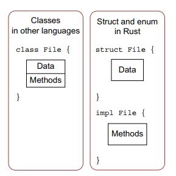
Briefly, functions are regarded as pure, meaning their behavior is determined solely by their arguments. Methods are inherently impure, given that one of their arguments is effectively a side effect. objects sometimes implement static methods, which do not include implicit arguments
Const Vs Static Vs Let
Constants represent concrete values and don't have any memory location associated with them. They are inlined wherever they are used.
Static a fixed memory location and exist as a single instance in the whole program. These can also be made mutable.
It can be confusing whether or not you should use a constant item or a static item. Constants should, in general, be preferred over statics unless one of the following are true:
- Large amounts of data are being stored
- The single-address property of statics is required.
- Interior mutability is required. >> Another difference between constants and static variables is that static variables can be mutable. >> Accessing and modifying mutable static variables is unsafe
If variables defined with let are immutable, then why does Rust include a const keyword? The short answer is that data behind let can change. Rust allows types to have an apparently contradictory property of interior mutability.
Some types such as std:sync::Arc and std:rc::[[Rc]] present an immutable façade, yet change their internal state over time. In the case of those two types, these increment a reference count as references to those are made and decrement that count when those references expire.
At the level of the compiler, let relates more to aliasing than immutability. Aliasing in [[compiler]] terminology refers to having multiple references to the same location in memory at the same time. Read-only references (borrows) to variables declared with let can alias the same data. Read-write references (mutable borrows) are guaranteed to never alias data.
Generally, if you don't need to rely on #singleton property of statics and its predefined memory location and just want a concrete value, you should prefer using consts. They allow the compiler to make better optimizations and are more straightforward to use.
Const in Trait, Enum, Struct
#![allow(unused)] fn main() { trait Circular { const PI: f64 = 3.14; //... } }
#![allow(unused)] fn main() { enum Item { One, Two } struct Food { Cake, Chocolate } impl Item { const DEFAULT_COUNT: u32 = 34; } impl Food { const FAVORITE_FOOD: &str = "Cake"; } }
Include_Consequences
Master Rust says: Vec=>String=>&str=>slice=>[u8]
Type inference
a component of the compiler called the type checker uses the #Hindley_Milner type inference algorithm to decide what the types of local variables should be. It is a set of rules about establishing types of expressions based on their usage. As such, it can infer types based on the environment and the way a type is used. One such example is the following:
#![allow(unused)] fn main() { let mut v = vec![]; v.push(2); // can figure type of `v` now to be of Vec<i32> }
With only the first line initializing the vector, Rust's type checker is unsure of what the type for v should be.
It's only when it reaches the next line, v.push(2), that it knows that v is of the type, Vec
But sometimes, the type checker cannot figure out types of variables in complex situations
#![allow(unused)] fn main() { let bytes = file.bytes().collect();//compiler error means Hindley_Milner could not detect type let bytes: Vec<Result<u8, _>> = file.bytes().collect(); // we need to help algo to detect type }
Type Aliases
if you have an API from your crate where you return a Result type, wrapping a complex object as depicted below:
pub struct ParsedPayload<T> { inner: T } pub struct ParseError<E> { inner: E } pub fn parse_payload<T, E>(stream: &[u8]) -> Result<ParsedPayload<T>, ParseError<E>> { unimplemented!(); } fn main() { // todo }
aliasing Provides a thin wrapper over Rc<RefCell
> for higher ergonomics, as managing nested types gets annoying.
#![allow(unused)] fn main() { // added a type alias type ParserResult<T, E> = Result<ParsedPayload<T>, ParseError<E>>; // and modify parse_payload function as: pub fn parse_payload<T, E>(stream: &[u8]) -> ParserResult<T, E> { unimplemented!(); } }
another example
#![allow(unused)] fn main() { type SomethingComplex<T> = Vec<Result<Option<T>>>; }
Concept Nan
Floating-point types include “not a number” values (represented in Rust syntax as NAN values) to handle these cases. NAN values poison other numbers. Almost all operations interacting with NAN return NAN.Another thing to be mindful of is that, by definition, NAN values are never equal. To program defensively, make use of the is_nan() and is_finite() methods. Inducing a crash, rather than silently proceeding with a mathematical error, allows you to debug close to what has caused the problem. The following illustrates using the is_finite().
Glossery
In Rust, global variables are called static variables
[[o-bigint]]
[[o-bigrational]]
[[ria-float]]
[[ria-types-complex]]
A collection of numeric types and traits for Rust. This includes new types for big integers, rationals, and complex numbers, new traits for generic programming on numeric properties like Integer, and generic range iterators.
We have some library for generic numbers that say
rughas a better performance thannum:
Rug provides integers and floating-point numbers with arbitrary precision and correct rounding:
- Integer is a bignum integer with arbitrary precision,
- Rational is a bignum rational number with arbitrary precision,
- Float is a multi-precision floating-point number with correct rounding, and
- Complex is a multi-precision complex number with correct rounding.
[[rust-in-action/ria-types-generic]]
[[rd-types-generic]]
[[rg-types-generic]]
[[pnkfx-types-generic]]
Generics are part of the language design feature that enables code reuse and the Don't repeat yourself (#DRY) principle.
the case of statically typed programming languages. They first appeared in ML.
telling the compiler to fill in the actual types later when any code instantiates them.
Generic functions are a cheap way to give the illusion of polymorphic code.
Note: By substitution, we mean that every time a generic item is used with a concrete type, a specialized copy of that code is generated at compile time with the type variable T, getting replaced with the concrete type. This process of generating specialized functions with concrete types at compile time is called [[monomorphization]] , which is the procedure of doing the opposite of [[polymorphic]] functions.
generics is preferred in most cases because it has no runtime overhead, as is the case with trait objects.
we don't need the
after impl because of the presence of u32 as a concrete type.
Let's look at the case of instantiating Vec
, a generic type. Without any type signature, the following code does not compile:
fn main() { let a = Vec::new(); }
You might be wondering whether there is a runtime cost when using generic type parameters. The good news is that using generic types won't make your run any slower than it would with concrete types.
Rust accomplishes this by performing monomorphization of the code using generics at compile time.
Monomorphization is the process of turning generic code into specific code by filling in the concrete types that are used when compile
Every programming language has tools for effectively handling the duplication of concepts.
In Rust, one such tool is generics. Generics are abstract stand-ins for concrete types or other properties. When we’re writing code, we can express the behavior of generics or how they relate to other generics without knowing what will be in their place when compiling and running the code. The fragment <T: std::ops::Add<Output = T>> says that T must implement std::ops::Add. Using a single type variable T with the trait bound ensures that arguments i and j, as well as the result type, are the same type and that their type supports addition.
Right Hand Side
or default type parameters, for example the fragment <T: std::ops::Add<Output = T>> says that T must implement trait std::ops::Add. Using a single type variable T with the trait bound ensures that arguments i and j, as well as the result type, are the same type and that their type supports addition.
#![allow(unused)] fn main() { trait Add<Rhs=Self> { type Output; fn add(self, rhs: Rhs) -> Self::Output;} }
tags[[pattern_new_type]]
[[types-size]]
[[types-float]]
[[types-array]]
[[types-char]]
[[types-tuple]]
[[types-radix]]
Rust’s standard library is comparatively slim. It excludes numeric types that are often available within other languages
Integers that assume the CPU’s “native” width. For example, in 64-bit CPUs, usize and isize will be 64-bits wide.
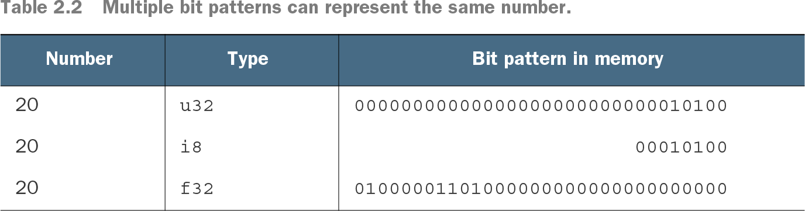
[[pb-return]]
[[re-return]]
The None variant is represented by a null pointer [[none]]
If you put a semicolon in the last expression, the block expressions default to a return value of the unit () type.
[[rd-types-string]]
[[re-types-string]]
[[pp-types-string]]
[[ria-types-string]]
[[mr-types-string]]
[[clap-types-string]]
str
str is a high-performance, relatively feature-poor type. Once created, str values cannot expand or shrink. In this sense, these are similar to interacting with a raw memory array. Unlike a raw memory array, though, str values are guaranteed to be valid UTF-8 characters.
str is usually seen in this form: &str. A &str (pronounced string slice) is a small type that contains a reference to str data and a length. Attempting to assign a variable to type str will fail. The Rust compiler wants to create fixed-sized variables within a function’s stack frame. As str values can be of arbitrary length, these can only be stored as local variables by reference.
String Vs str
Passing &str around your program is nearly free: it incurs nearly no allocation costs and no copying of memory. owned strings (String) and borrowed strings (&str). A &str is a borrowed type. In practical terms, this means that &str can be thought of as read-only data, whereas String is read-write.String is an owned type. "A String" is made up of three parts, shown on the left: a pointer to the memory that holds the contents of the string, a length, and a capacity. String store data on heap and refs to stack
One (&str) is allocated on the stack, the other (String) allocates memory on the heap. That means that types cannot be trivially cast between one another. It’s possible, however, to work around this with Rust’s generics.
tags[[as_ref]] [[as_mut]] [[into]] [[GENERIC]]
#![allow(unused)] fn main() { fn is_strong<T: AsRef<str>>(password: T) -> bool { password.as_ref().len() > 5 } }
#![allow(unused)] fn main() { fn is_strong<T: Into<String>>(password: T) -> bool { password.into().len() > 5 } }
String-str Vs char
•char—A single character encoded as 4 bytes. The internal representation of char is equivalent to UCS-4/UTF-32. This differs from &str and String, which encodes single characters as UTF-8. Conversion does impose a penalty, but it means that char values are of fixed-width and are, therefore, easier for the [[COMPILER]]] to reason about. Characters encoded as UTF-8 can span 1 to 4 bytes.
•[u8]—A slice of raw bytes, usually found when dealing with streams of binary data. It’s easy to get confused with slices [T], which do not have a compile-time length. Slices are dynamically sized array-like objects.The term dynamically sized means that their size is not known at compile time. Yet, like arrays, these don’t expand or contract. The use of the word dynamic in dynamically sized is closer in meaning to dynamic typing rather than movement. The lack of compile-time knowledge explains the distinction in the type signature between an array ([T; n ]) and a slice ([T]).
Slices are important because it’s easier to implement traits for slices than arrays. Traits are how Rust programmers add methods to objects. As [T; 1], [T; 2], ..., [T; n ] are all different types, implementing traits for arrays can become unwieldy.
Creating a slice from an array is easy and cheap because it doesn’t need to be tied to any specific size.
Another important use for slices is their ability to act as a view on arrays (and other slices). The term view here is taken from database technology and means that slices can gain fast, read-only access to data without needing to copy anything around.
The problem with slices is that Rust wants to know the size of every object in your program, and slices are defined as not having a compile-time size. References to the rescue. As mentioned in the discussion about the use of the term dynamically sized, slice size is fixed in memory. These are made up of two usize components (a pointer and a length). hat’s why you typically see slices referred to in their referenced form, &[T] (like string slices that take the notation &str).
In constrast to the String type, str is a built-in type known to the compiler and is not something from the standard library. String slices are created as &str.The &str types, once created, can't be modified as they are created immutable by default.while String is a custom type from the standard library. You could implement your own similar String abstraction on top of Vec
.
All stack-allocated values need to have a proper size known and, due to this, str cannot be initialized.
#![allow(unused)] fn main() { let my_str: str = "This is borrowed"; }
Internally, &String automatically coerces to &str, due to the type #coercion trait Deref implemented for &String to &str. This is because String implements Deref for the str type.
fn say_hello(to_whom: &str) { println!("Hey {}!", to_whom) } fn main() { let string: String = string_slice.into(); say_hello(&string); //No problem }
Vector
•Vec
String is to Vec
as str is to [u8]. Vectors (Vec ) are growable lists of T Using vectors is extremely common in Rust code. These incur a small runtime penalty compared to arrays because of the extra bookkeeping that must be done to enable their size to change over time. But vectors almost always make up for this with their added flexibility. Vec performs best when you can provide it with a size hint via Vec:: #with_capacity(). Providing an estimate minimizes the number of times memory will need to be allocated from the OS. Lists of things are incredibly common. The two types that you will work with most often are arrays and vectors. Arrays are fixed-width and extremely lightweight.
OOString Vs Path
out of bounds crashes
• std::ffi:: [[OSString]] —A platform-native string. It’s behavior is close to String but without a guarantee that it’s encoded as #UTF-8 and that it won’t contain the zero byte (0x00).
• std:: [[path]] ::Path—A string-like type that is dedicated to handling filesystem paths.
Glossery
Literal: "hello" called-> string literal, equal=> &'static str.
Notation: &str(pronounced as stir), &[]
{{{}}}: mustache-string interpolation - for printing {} in println!()
[[mr-types-static]]
All access to a static is safe, but there are a number of restrictions on statics:
- The type must have the Sync trait bound to allow thread-safe access.
- Constants cannot refer to statics.
Statics are generally combined with synchronization primitives for any kind of thread-safe use. They are also used to implement global locks and when integrating with C libraries
Until now, we’ve not talked about global variables, which Rust does support but can be problematic with Rust’s ownership rules. If two threads are accessing the same mutable global variable, it can cause a [[data_race]].
'static lifetime, which means the Rust compiler can figure out the lifetime and we aren’t required to annotate it explicitly. Accessing an immutable static variable is safe.
Newtype pattern = wrapper type = NewPattern = Thin Wrapper: Thin wrapping of an existing type in another struct.we specify impl Addto set the value of the Rhs type parameter instead of using the default of Self.
#![allow(unused)] fn main() { impl Add<Meters> for Millimeters {type Output = Millimeters;fn add(self, other: Meters) -> Millimeters {}} }
Newtype Pattern
Using the Newtype Pattern to Implement External Traits on External Types
' thin wrapper around the type' : part of Vec
As an example, let’s say we want to implement Display on Vec
The downside of using this technique is that Wrapper is a new type, so it doesn’t have the methods of the value it’s holding. We would have to implement all the methods of Vec
use std::fmt; struct Wrapper(Vec<String>); impl fmt::Display for Wrapper { fn fmt(&self, f: &mut fmt::Formatter) -> fmt::Result { write!(f, "[{}]", self.0.join(", ")) } } fn main() { let w = Wrapper(vec![String::from("hello"), String::from("world")]); println!("w = {}", w); }
use wrapper types, which allow more flexibility than what is available by default. These, however, incur costs at runtime to ensure that Rust’s safety guarantees are maintained. Another way to phrase this is that Rust allows programmers to opt in to garbage collection To explain the wrapper type strategy, let’s introduce a wrapper type: std:rc::Rc. std:rc::Rc takes a type parameter T and is typically referred to as Rc
. Rc reads as “R. C. of T” and stands for “a reference-counted value of type T.” Rc provides shared ownership of T. Shared ownership prevents T from being removed from memory until every owner is removed.
As indicated by the name, reference counting is used to track valid references. As each reference is created, an internal counter increases by one. When a reference is dropped, the count decreases by one. When the count hits zero, T is also dropped.
Rc
implements Clone. Every call to base.clone() increments an internal counter. Every Drop decrements that counter. When the internal counter reaches zero, the original instance is freed.
Glossery
Thin wrapper around the type: part of Vecis noticed. struct Wrapper(Vec );
wrapper type= reference-counted value = shared ownership = track valid references
tags[[new_type]] [[orphan]]
A union is similar to a struct, but only one declared field is used in a particular instance at one time. Unions are primarily used to interface with unions in C code. Accessing union fields is unsafe because Rust can’t guarantee the type of the data currently being stored in the union instance. At the time of writing this book, union types only allow Copy types as their fields. They share the same memory space with all of their fields, exactly like C unions.
[[RACE]]
[[RAYON]]
[[MPSC]]
[[ATOMIC]]
[[THREAD-TIME]]
[[UNSAFE-THREAD]]
[[THREAD-SHARESTATE]]
Rc
is not thread-safe. In multithreaded code, it’s much better to replace Rc with Arc and Rc<RefCell > with Arc<Mutex >. [[Arc]] stands for #atomic_reference_counter.
Thread
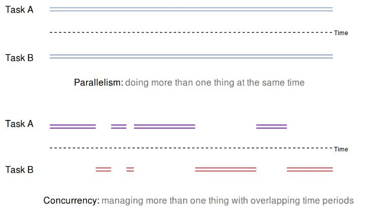
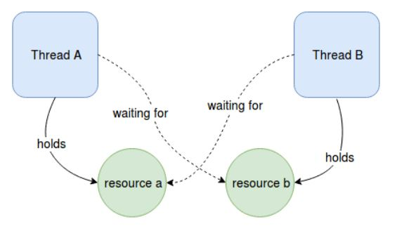
Which parts of your code on different threads will run. This can lead to problems, such as:
- Race conditions, where threads are accessing data or resources in an inconsistent order
- Deadlocks, where two threads are waiting for each other to finish using a resource the other thread has, preventing both threads from continuing
- Bugs that happen only in certain situations and are hard to reproduce and fix reliably
Programming languages implement threads in a few different ways: APIs to create threads is sometimes called 1:1, meaning one operating system thread per one language thread.the green-threaded model is called the M:N model: there are M green threads per N operating system threads, where M and N are not necessarily the same number. The green-threading M:N model requires a larger language runtime to manage threads. As such, the Rust standard library only provides an implementation of 1:1 threading. Because Rust is such a low-level language, there are crates that implement M:N threading if you would rather trade > overhead for aspects such as more control over which threads run when and lower costs of context switching, for example.
Blocking a thread means that thread is prevented from performing work or exiting.
you can divide a calculation into independent parts, split those parts across threads, and then use a Mutex
to have each thread update the final result with its part.
Thread•Strategies
Priority Performance: Stealing_Join:
calling join() is similar to spawning two threads. execute code in parallel when there are idle CPUs to handle it. When join is called from outside the thread pool, the calling thread will block while the closures execute in the pool. When join is called within the pool, the calling thread still actively participates in the thread pool. It will begin by executing closure A (on the current thread). While it is doing that, it will advertise closure B as being available for other threads to execute. Once closure A has completed, the current thread will try to execute closure B; if however closure B has been stolen, then it will look for other work while waiting for the thief to fully execute closure B. (This is the typical work-stealing strategy). Send is require because we have jump from quick func(thread a) to part func(thread b) frequently
Atomic:
Atomic types provide primitive shared-memory communication between threads, and are the building blocks of other concurrent types. This module defines atomic versions of a select number of primitive types, including AtomicBool, AtomicIsize, AtomicUsize, AtomicI8, AtomicU16, etc. Atomic types present operations that, when used correctly, synchronize updates between threads.
Each method takes an Ordering which represents the strength of the memory barrier for that operation. These orderings are the same as the C++20 atomic orderings. For more information see the nomicon. Atomic variables are safe to share between threads (they implement Sync) but they do not themselves provide the mechanism for sharing and follow the threading model of Rust. The most common way to share an atomic variable is to put
it into an Arc (an atomically-reference-counted shared pointer). Atomic types may be stored in static variables, initialized using the constant initializers like AtomicBool::new Atomic statics are often used for lazy global initialization.
Spin_Loop_Yeild:
also known as busy loop and spin loop-If you want to sleep pause a thread for short amounts of time, or if your application is sensitive to timing, use a spin loop
Sleep:
A sleep is a request to the OS that the thread should be suspended until the time has passed
Thread•Spawning
Threads are the primary mechanism that operating systems provide for enabling concurrent execution. Modern operating systems ensure that each thread has fair access to the CPU. Understanding how to create threads (often referred to as spawning treads) and understanding their impact are fundamental skills for programmers wanting to make use of multi-core CPUs.
threads “don’t scale.” What does that mean? Every thread requires its own memory, and by implication, we’ll eventually exhaust our system’s memory. Before that terminal point, though, thread creation begins to trigger slowdowns in other areas. As the number of threads to schedule increases, the OS scheduler’s work increases. When there are many threads to schedule, deciding which thread to schedule next takes more time. Spawning threads is not free. It demands memory and CPU time. Switching between threads also invalidates caches.
if you’re thinking that sleeping is not a representative workload, It asks each thread to enter a spin loop. spin loop sterategy is better(performance) than sleep strategy.
It’s also possible to use both: sleep for the bulk of the time and a spin loop towards the end. Second, CPU-intensive multithreading doesn’t scale well past the number of physical cores.
Thread•Spawin•Move•Capture
The move closure is often used alongside thread::spawn because it allows you to use data from one thread in another thread.
we’re not using any data from the main thread in the spawned thread’s code. To use data from the main thread in the spawned thread, the spawned thread’s closure must capture the values it needs.
The move keyword overrides Rust’s conservative default of borrowing; it doesn’t let us violate the ownership rules.
move closures may still implement Fn or FnMut, even though they capture variables by move. This is because the traits implemented by a closure type are determined by what the closure does with captured values, not how it captures them
When the spawned thread wants to access variables that are defined in the parent’s scope, called a capture, Rust often complains that captures must be moved into the closure. To indicate that you want to move ownership, anonymous functions take a move keyword:
#![allow(unused)] fn main() { use std::{thread, time}; thread::spawn(move || { // ... }); }
Thread•Spawning•Join
join is an extension of the thread metaphor. When threads are spawned, these are said to have forked from their parent thread. To join threads means to weave these back together again.
In practice, join means wait for the other thread to finish. The join() function instructs the OS to defer scheduling the calling thread until the other thread finishes.
.join()//means guarantee - waiting for All Threads to Finish Using join Handles. A JoinHandle is an owned value that, when we call the join method on it, will wait for its thread to finish.
Thread•Join•WorkStealing
Takes two closures and potentially runs them in parallel. It returns a pair of the results from those closures.
Conceptually, calling join() is similar to spawning two threads, one executing each of the two closures. However, the implementation is quite different and incurs very low overhead. The underlying technique is called "work stealing": the Rayon runtime uses a fixed pool of worker threads and attempts to only execute code in parallel when there are idle CPUs to handle it.
When join is called from outside the thread pool, the calling thread will block while the closures execute in the pool. When join is called within the pool, the calling thread still actively participates in the thread pool. It will begin by executing closure A (on the current thread). While it is doing that, it will advertise closure B as being available for other threads to execute. Once closure A has completed, the current thread will try to execute closure B; if however closure B has been stolen, then it will look for other work while waiting for the thief to fully execute closure B. (This is the typical work-stealing strategy).
Thread•Rec•Try
We’re using recv, short for receive, which will block the main thread’s execution and wait until a value is sent down the channel. Once a value is sent, recv will return it in a Result<T, E>. When the sending end of the channel closes, recv will return an error to signal that no more values will be coming.
The try_recv method doesn’t block, but will instead return a Result<T, E> immediately: an Ok value holding a message if one is available and an Err value if there aren’t any messages this time. Using try_recv is useful if this thread has other work to do while waiting for messages: we could write a loop that calls try_recv every so often, handles a message if one is available, and otherwise does other work for a little while until checking again
[[pnkfx-mpsc]]
[[rd-rayon]]
[[pp-rayon]]
[[re-atomic]]
[[pnkfx-mpsc]]
[[ria-mpsc]]
Using Message Passing to Transfer Data Between Threads: Here’s the idea in a slogan from the Go language documentation: “Do not communicate by sharing memory; instead, share memory by communicating.”
One major tool Rust has for accomplishing message-sending concurrency is the channel, A channel in programming has two halves: a transmitter and a receiver. A channel is said to be closed if either the transmitter or receiver half is dropped.
We create a new channel using the mpsc::channel function; mpsc stands for multiple producer, single consumer. In short, the way Rust’s standard library implements channels means a channel can have multiple sending ends that produce values but only one receiving end that consumes those values
[[ria-thread-time]]
[[pp-command]]
[[EXTERN-FFI]]
[[SAFE_ABSTRACTION]]
[[SAFE_STATIC_MUT]]
[[THREAD_UNSAFE]]
An unsafe block implies that the programmer takes full responsibility for any consequences
By calling an unsafe function within an unsafe block, we’re saying that we’ve read this function’s documentation and take responsibility for upholding the function’s contracts.
#![allow(unused)] fn main() { unsafe fn dangerous() {} unsafe { dangerous(); } }
[[rd-ffi]]
Functions declared within extern blocks are always unsafe to call from Rust code. The reason is that other languages don’t enforce Rust’s rules and guarantees, and Rust can’t check them, so responsibility falls on the programmer to ensure safety.
the "C" part defines which application binary interface (ABI) the external function uses: the ABI defines how to call the function at the assembly level.
extern "C" { fn abs(input: i32) -> i32; } fn main() { unsafe { println!("Absolute value of -3 according to C: {}", abs(-3)); } }
MANGLE
We also need to add a #[no_mangle] annotation to tell the Rust compiler not to mangle the name of this function. Mangling is when a compiler changes the name we’ve given a function to a different name that contains more information for other parts of the compilation process to consume but is less human readable. Every programming language compiler mangles names slightly differently, so for a Rust function to be nameable by other languages, we must disable the Rust compiler’s name mangling.
In the following example, we make the call_from_c function accessible from C code, after it’s compiled to a shared library and linked from C:
#![allow(unused)] fn main() { #[no_mangle] pub extern "C" fn call_from_c() { println!("Just called a Rust function from C!"); } }
tags
[[rd-safe-abstraction]]
Just because a function contains unsafe code doesn’t mean we need to mark the entire function as unsafe. In fact, wrapping unsafe code in a safe function is a common abstraction.
tags
[[rd-safe-static-mut]]
Until now, we’ve not talked about global variables, which Rust does support but can be problematic with Rust’s ownership rules. If two threads are accessing the same mutable global variable, it can cause a data race. 'static lifetime, which means the Rust compiler can figure out the lifetime and we aren’t required to annotate it explicitly. Accessing an immutable static variable is safe.
tags
[[edu-macro]]
[[rd-macro]]
Macros are the Rust metaprogramming feature that creates code in compile-time. Through this, we can save duplication, but we need to be careful because we could make a mess.
The type of parameter or the fragment specifier is expr, but Rust offers other parameters as well:
- [*] item: An item.
- [*] block: A block expression.
- [*] stmt: A statement.
- [*] pat: A pattern.
- [*] expr: An expression.
- [*] ty: A type.
- [*] ident: An identifier or a keyword.
- [*] path: A type path.
- [*] tt: A token.
- [*] meta: The contents of an attribute.
- [*] lifetime: A lifetime token.
- [*] vis: A possibly empty visibility qualifier.
- [*] literal: A literal expression.
The best-case scenario for a macro is to avoid duplication.
#![allow(unused)] fn main() { macro_rules! create_model { ($name:ident) => { #[allow(unused_variables)] #[allow(dead_code)] #[derive(Debug)] struct $name { product_details: Vec<ProductDetail>, date: Date, subtotal: Option<f64>, total_tax: f64, total: Option<f64> } } } create_model!(Sale); create_model!(Purchase); create_model!(Budget); }
tags
By default, Rust recommends absolute imports within root modules. Absolute imports are done starting with the crate keyword, whereas relative imports are done using the self keyword. When re-exporting sub-modules to their parent modules, we might benefit from relative imports, as using absolute imports becomes long and redundant.
The privacy of items in Rust starts at the module level. As a library author, to expose things to users from a module, we use the pub keyword. But there are items that we only want to expose to other modules within the crate, but not to the users. In such cases, we can use the -pub(crate) modifier for the item, which allows the item to be exposed only within the crate.
[[PISTON]]
[[types-int]]
[[mr-size]]
[[POINTERS]]
Memory
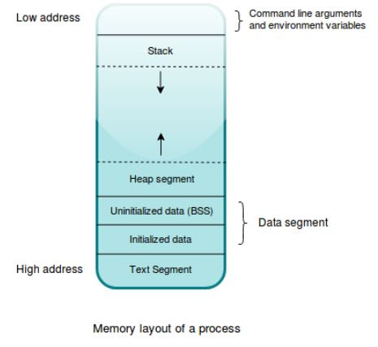
- Text segment: This section contains the actual code to be executed in the compiled binary. The text segment is a read-only segment and any user code is forbidden to modify it. Doing so can result in a crash of the program.
- Data segment: This is further divided into subsections, that is, the initialized data segment and uninitialized data segment, which is historically known as Block Started by Symbol (BSS), and holds all global and static valuesdeclared in the program. Uninitialized values are initialized to zero when they are loaded into memory.
- Stack segment: This segment is used to hold any local variables and the return addresses of functions. All resources whose sizes are known in advance and any temporary/intermediary variables that a program creates are implicitly stored on the stack.
- Heap segment: This segment is used to store any dynamically allocated data whose size is not known up front and can change at runtime depending on the needs of the program. This is the ideal allocation place when we want values to outlive their declaration within a function.
a process is not allowed to access the physical memory directly. Instead, it uses a virtual memory, which is mapped to the actual physical memory by the OS using an in-memory data structure called pages, which are maintained in page tables. The process has to request memory from the OS for its use, and what it gets is a virtual address that is internally mapped to a physical address in the RAM. For performance reasons, this memory is requested and processed in chunks. When virtual memory is accessed by the process,the memory management unit does the actual conversion from virtual to physical memory.
a process from the OS is known as memory allocation. A process requests a chunk of memory from the OS by using system calls, and the OS marks that chunk of memory in use by that process.
POSIX is an acronym for Portable Operating System Interface.
A GC runs as a daemon thread as part of the running program and analyzes the memory that is no longer being referenced by any variable in the program and frees it automatically at certain points in time along with program execution.
Memory Management Strategies
-
Manual: C has his form of memory management, where it's completely the programmers responsibility to put free calls after the code is done using memory. C++ automates this to some extent using smart pointers where the free call is put in a class's deconstructor method definition.
-
Automatic: Languages with this form of memory management include an additional runtime thread,that is the Garbage Collector, that runs alongside the program as a daemon thread. Most dynamic languages based on a virtual machine such Python, Java, C# and Ruby rely on automatic memory management. Automatic memory management is one of the reasons that writing code in these languages is easy.
-
[[SemiAutomatic]]: Languages such as Swift fall into this category. They don't have a dedicated GC built in as part of the runtime, but offer a reference counting type, which does automatic management of memory at a granular level Rust also provides the reference counting types Rc
and Arc .
the majority of Common Vulnerabilities & Exposure (CVEs) in software related to memory management, it shows that we humans are not very good at this!
Memory Allocator
the compiler rustc itself uses the jemalloc allocator, whereas the libraries and binaries that are built from Rust use the system allocator. On Linux, it would be the glibc memory allocator APIs. Jemalloc is an efficient allocator library for use in multithreaded environments and it greatly reduces the build time of Rust programs. While jemalloc is used by the compiler, it's not used by any applications that are built with Rust because it increases the size of the binary. So, compiled binaries and libraries always use the system allocators by default.
Rust also has a pluggable allocator design, and can use the system allocator or any user implemented allocator that implements the GlobalAlloc trait from the std::alloc module. This is often implemented by the #[[global_allocator]] attribute, which can be put on any type to declare it as an allocator. For rare cases where you need to allocate a primitive type on the heap, you can use the Box
type, which is a generic smart pointer type.
tags[[segmentation_fault_error]] [[GlobalAlloc]]
Stack
- The stack actually contains two levels of objects: #stack_frame s and data.
- The stack grants programmers access to multiple elements stored within it, rather than the top item only.
- The stack can include elements of arbitrary size, where the implication of the dinner plate(exmple theory in book) analogy is that all elements must be of the same size.
So why is the stack called the stack? Because of the usage pattern. Entries on the stack are made in a Last In, First Out (#LIFO) manner. The entries in the stack are called stack frames. Stack frames are created as function calls are made. As a program progresses, a cursor within the CPU updates to reflect the current address of the current stack frame.
one CPU instruction: incrementing/decrementing the stack frame pointer
The #cursor is known as the [[stack_pointer]]. As functions are called within functions, the stack pointer decreases in value as the stack grows. When a function returns, the stack pointer increases.Stack frames contain a function’s state during the call. When a function is called within a function, the older function’s values are effectively frozen in time. Stack frames are also known as activation frames, and less commonly allocation records.
Unlike dinner plates, every stack frame is a different size.
The stack frame contains space for its function’s arguments, a pointer to the original call site, and local variables (except the data which is allocated on the heap).
The stack’s primary role is to make space for local variables. Why is the stack fast?
All of a function’s variables are side by side in memory. That speeds up access.
The stack frame pointer (esp) is a CPU register that always points to the top of the stack. The stack frame pointer keeps on updating as functions get called, or when they return. When a function returns, its stack frame is discarded by restoring the stack frame pointer to where it was before entering the function.
Heap
The heap is an area of program memory for types that do not have known sizes at compile time. What does it mean to have no known size at compile time? In Rust, there are two meanings. Some types grow and shrink over time as required.
Obvious cases are String and Vec
. Other types are unable to tell the Rust compiler how much memory to allocate even though these don’t change size at runtime. These are known as dynamically sized types. Slices ([T]) are the commonly cited example. Slices have no compile-time length. Internally, these are a pointer to some part of an array. But slices actually represent some number of elements within that array. Another example is a trait objects.
[[RAII]] stands for Resource Acquisition Is Initialization; a paradigm suggesting that resources must be acquired during initialization of objects and must be released when they are deallocated or their destructors are called.
The only way to allocate memory on the heap is through smart pointer types.
The heap memory is to be used with care. Values in the heap can possibly live forever during the lifetime of the program if not freed, and may eventually lead to the program being killed by the Out Of Memory (OOM) killer in the kernel. At runtime, a bug in the code or mistake from the developer can also cause the program to either forget to free the memory, or access a portion of memory that is outside the bounds of its memory layout, or dereference a memory address in the protected code segment. When this happens, the process receives a trap instruction from the kernel, which is what you see as a segmentation fault #error message, followed by the process getting aborted. As such, we must ensure that processes and their interactions with memory need to be safe! Either we as programmers need to be critically aware of our malloc and free calls or used memory safe language to handle these details for us.
Stack Vs Heap
- The stack is fast, but the heap is slow.
- That difference leads to the following axiom: “When in doubt, prefer the stack.” To place data onto the stack, the compiler must know the type’s size at compile time- Translated to Rust, that means, “When in doubt, use types that implement Sized.”
- based on Memory layout image we can say Heap in-replacable space in comprasion of stack that is LIFO
| Stack | Heap |
|---|---|
| Simple | Complex |
| Safe | Dangerous* |
| Fast** | Slow |
| Rigid | Flexible |
| no cost | cost of involves dereferencing the pointer |
"* Not in safe Rust!"
"** because a function’s local variables"
The heap is less organized: when you put data on the heap, you request a certain amount of space. The memory allocator finds an empty spot in the heap that is big enough, marks it as being in use, and returns a pointer, which is the address of that location. This process is called allocating on the heap and is sometimes abbreviated as just allocating. Pushing values onto the stack is not considered allocating. Because the pointer to the heap is a known, fixed size, you can store the pointer on the stack, but when you want the actual data, you must follow the pointer. Think of being seated at a restaurant. When you enter, you state the number of people in your group, and the staff finds an empty table that fits everyone and leads you there. If someone in your group comes late, they can ask where you’ve been seated to find you.
Pushing to the stack is faster than allocating on the heap because the allocator never has to search for a place to store new data; that location is always at the top of the stack. Comparatively, allocating space on the heap requires more work, because the allocator must first find a big enough space to hold the data and then perform bookkeeping to prepare for the next allocation.
What is dynamic memory allocation?
At any given time, a running program has a fixed number of bytes with which to get its work done.
When the program would like more memory, it needs to ask for more from the OS.
Dynamic memory allocation is a three-step process:
- Request memory from the OS via a system call. In the UNIX family of operating systems, this system call is alloc(). In MS Windows, the call is HeapAlloc().
- Make use of the allocated memory in the program.
- Release memory that isn’t needed back to the OS via free() for UNIX systems and HeapFree() for Windows.
Memory Data Leak
Rust’s memory safety guarantees make it difficult, but not impossible, to accidentally create memory that is never cleaned up (known as a memory leak). Preventing memory leaks entirely is not one of Rust’s guarantees in the same way that disallowing data races at compile time is, meaning memory leaks are memory safe in Rust.
We can see that Rust allows memory leaks by using Rc
and RefCell : it’s possible to create references where items refer to each other in a cycle. This creates memory leaks because the reference count of each item in the cycle will never reach 0, and the values will never be dropped.
Memory Safety
Safety: cannot point to invalid memory and remain valid in all code paths. In other words, safety basically boils down to pointers having valid references all of the time in your program, and that the operations with pointers do not lead to undefined behavior (#error).
Undefined behavior is the state of a program where it has entered a situation that has not been accounted for in the compiler's because the compiler specification does not clarify what happens in that situation.
Languages based on virtual machines use garbage collection to eliminate whole classes of memory safety issues.
While Rust doesn't have a built-in GC, it relies on the same RAII built into the language and makes freeing used memory automatic for us based on the scope of variables and is much more safer than C or C++.
Memory safety bugs lead to memory leaks.
Deallocating
Note: In C++, this pattern of deallocating resources at the end of an item’s lifetime is sometimes called Resource Acquisition Is Initialization (RAII). The drop function in Rust will be familiar to you if you’ve used RAII patterns.
Double Free
This is a problem: when s2 and s1 (s2 is copied s1 means 2different pointer and the same data) go out of scope, they will both try to free the same memory. This is known as a #error_double_free and is one of the memory safety bugs we mentioned previously. Freeing memory twice can lead to memory corruption, which can potentially lead to security vulnerabilities.
Memory Alignment
Word size: Word size means the number of bits of data processed by the microprocessor as a unit.
Memory access granularity: The minimum chunk of data accessed by the CPU from the memory bus is called the memory access granularity.
Data types in all programming languages have both a size and an alignment. The alignment of primitive types is equal to their size. So, usually, all primitive types are aligned and the CPU has no problem doing an aligned read for these. But when we create custom data types, compilers usually insert padding between our struct fields if they are not aligned to allow the CPU to access memory in an aligned manner.
UnRolling
// is an optimization that removes the overhead of the loop controlling code and instead generates repetitive code for each iteration of the loop.
#![allow(unused)] fn main() { let buffer: &mut [i32]; let coefficients: [i64; 12]; let qlp_shift: i16; for i in 12..buffer.len() { let prediction = coefficients.iter() .zip(&buffer[i - 12..i]) .map(|(&c, &s)| c * s as i64) .sum::<i64>() >> qlp_shift; let delta = buffer[i]; buffer[i] = prediction as i32 + delta; } }
Glossery
stack: contiguous layout memory = LIFO
tags[[memory_leak]] [[safety]] [[LIFO]]
[[clp-allocator]]
[[ria-piston]]
Some general strategies for minimizing heap allocations include
-
Using arrays of uninitialized objects. Instead of creating objects from scratch as required, create a bulk lot of those with zeroed values. When the time comes to activate one of those objects, set its values to non-zero. This can be a very dangerous strategy because you’re circumventing Rust’s lifetime checks.
-
Using an allocator that is tuned for your application’s access memory profile. Memory allocators are often sensitive to the sizes where these perform best.
-
Investigate arena::Arena and arena::TypedArena. These allow objects to be created on the fly, but alloc() and free() are only called when the arena is created and destroyed.